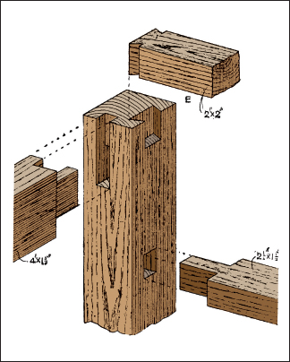

The Workshop
“Every nail driven should be as another rivet in the machine of the universe.”
—Henry David Thoreau
Houses, Runs, and Coops for Poultry
Sheds, Tool Houses, and Workshops
Woodworking is one of the most basic and most useful skills a person dedicated to self-sufficiency can master. Once you understand the basics of what tools to use and how to use them, there’s almost no limit to what you can construct. Here you will find a wide selection of the hand tools, materials, and processes used in woodworking, as well as diagrams and instructions for dozens of specific projects. Much of this section is adapted from the writings of Paul N. Hasluck, whose wealth of knowledge on the subject has served as the foundation for generations of woodworkers.
Classifying Tools
Tools can be categorized by their functions, as follows:
1. Geometrical tools for laying off and testing work: they include rules, straight-edges, gauges, etc.
2. Tools for holding and supporting work: such tools are benches, vices, stools, etc.
3. Paring or shaving tools, like chisels, spokeshaves, planes, etc.
4. Saws.
5. Percussion or impelling tools, such as hammers, mallets, screwdrivers, and (combined with cutting) hatchets and axes.
6. Boring tools, including gimlets and brace-bites, etc.
7. Abrading and scraping tools, such as rasps, scrapers, glasspaper, and implements such as whetstones, for sharpening edged tools.
The most useful tools in these categories are discussed in the following pages.
Tools for Marking and Scribing
The simplest of these is the pencil. Sharpen a flat oval section to a chisel edge; if sharpened to a point, the pencil wears away quickly and will only mark a fine, solid line for a few minutes. The greater surface area of lead in the chisel edge makes it last for longer before it requires resharpening. Steel scribing and marking tools are illustrated by Figures. 1 to 3. The chisel end marking awl (Figure 1) and the striking knife (Figure 2) are used for all purposes of scribing and marking smooth work, where an indented line works better than a black line, the scratch providing a good starting point for edge tools. A striking knife (Figure 3) can be made by grinding down an old table knife.
Figure 1—Chisel-end Marking Awl
Figure 2—Striking Knife and Marking Awl
Straight-edge
A straight-edge 15 feet long, 6 inches wide, and 1¼ inches thick is large enough for all practical purposes of the joiner, mason, bricklayer, engineer, etc. If you’re making your own, the best material is pine, as it is the least affected (permanently) by change of temperature or weather. The pine board must be cut from a straight-grown tree, since a board from a crooked trunk will not keep parallel and straight for any length of time, owing to the grain crossing and recrossing its (thickness) edge. Straight-edges are made from all parts of boards cut from whole logs, but you cannot assume they will keep perfectly straight and true for any length of time.
To test the truth of a straight-edge this size, get a clean board 1 foot longer and about 7 inches or 8 inches wide. Lay the straight strip at about the center of the board, and with a sharp pencil draw a line on the board along the trued edge of the strip, keeping the side close to the board, and making the line as fine as possible. Now turn the strip of the line, and if the trued edge is perfectly straight the line also will appear so. If the line is wavy, the edge must be planed until only one line is made when marked and tested from each side; mark a fresh line for each test, otherwise you can become confused and inaccurate. With one edge now perfectly true, you can proceed with the other edge. Set a sharp gauge to the required width, and mark the second edge lightly on each side of the rule, working the gauge from the true edge; then the wood is planed off to the gauge marks, and the second edge tested as to its being true with the first one, using the pencil line, as before. An even more precise test than the gauge line for parallelism can be done by using a pair of calipers. The points of the calipers are drawn along the edges, and if they are perfectly parallel, there will be no easy or hard places, the presence of which might possibly not be detected by the pencil line. If the edges will stand both these tests, the strip is perfectly straight and parallel.
Figure 3—Homemade Striking Knife
Figure 4—Whitworth Method of Testing Straight-edges
Whitworth Method of Testing Straight-edges
Sir J. Whitworth’s famous method of trueing engineers’ straight-edges should interest any woodworker. Three straight-edges are prepared individually, and each is brought to a moderate state of accuracy; two of them, A and B (Figure 4), are compared with each other by placing them edge to edge, and any irregularities found are removed. The process is then repeated until A and B fit each other perfectly. The third straight-edge, C, now is compared with both A and B, and when it fits both perfectly, then there is no doubt whatsoever that the three are straight. Why this is the case becomes obvious when you remember that though A may be rounded instead of being straight, and B may be hollow sufficiently to make them fit each other perfectly, it is impossible for C to fit both the rounded and the hollow straight-edge.
Figure 5—Testing Surface with Straight-edges
Testing Surfaces with Straight-edges
How surfaces are tested for winding with straight-edges is shown by Figure 5, from which it is obvious that if the work has warped ever so slightly a true straight-edge must disclose the fact, as it could not then lie flat on its edge across the work. If the board is in winding, each straight-edge will magnify the error. If the winding is wavy, the edges will touch at certain points, and in other places light will be seen between them and the work. Taking a sight from one straight-edge to the other is another test you can perform.
Rules
A 2-feet four-fold boxwood rule (Figure 6) is the best for the all-round purposes of the joiner; and for those who can use the slide rule, the tool shown in Figure 7 would be handy. A simple 2-feet two-fold rule (Figure 8) is useful, but the rule with double arch joints shown by Figure 9 will be your best bet. The average worker will find a simple rule preferable to an elaborate one. Figure 10 shows a combined rule and spirit level, the rule joint also being set out to serve as a protractor. This tool may prove useful in special circumstances, but its use as a spirit level is not recommended. It is preferable to have rule and level as two distinct tools.
Figure 6—Two-feet Four-fold Rule

Figure 7—Rule with Brass Slide
Figure 8—Two-feet Two-fold Rule
Dividing a Board with a Rule
A simple way to divide a board of any width into any number of parts is illustrated by Figure 11. Suppose a board of 9 inches is to be cut into six equal parts; place the 1-foot rule so that its ends touch the opposite edges of board, as shown in Figure 11; draw a line right across, and upon this line mark off from the rule every 2 inches, as 2, 4, 6, etc. Remove the rule, and draw lines parallel with the edge of the board, intersecting with the marks upon the oblique line, thus obtaining six parts, each really 1½ inches wide. The principle of this is simple: 2 inches is the one-sixth part of 1 foot, and whatever be the slant of the rule across the board (and the narrower the board, the greater the slant) each 2-inch mark must denote a one-sixth less than 24 inches length or width is to be divided into eight parts; then as 3 inches is one-eighth of 2 feet, use a 2-foot rule in the same way as before, and mark off at every 3 inches.
Squares and Bevels
Woodworkers constantly use squares for setting out and testing work. The simplest is the try square. A combination try and miter square is shown by Figure 12. This has an iron stock hollowed out to lower its weight to that of a wooden one. This is a useful and cheap tool, very unlikely to get out of truth. A patent adjustable try square is illustrated by Figure 13. The set screw clamps the blade in the stock just where it may be most convenient for awkward work such as puttingbutts, locks, and other fittings on doors and windows. The graduated blade is very useful. The sliding bevel is handy for setting off angles in duplicate, since by using the set screw, the blade can be made to assume any angle with the stock. Figure 14 shows a bevel with a simple ebony stock, and Figure 15 shows one with an ebony stock framed in brass, this protection keeping the edges true for an almost unlimited period. The joiner’s steel square is a mere right angle of steel, sometimes nickel plated, graduated in inches, ¼ inch, and 1/16 inch.
Testing and Correcting Try square
A carpenter’s try square that is thought to be untrue may be tested in the following way. Get a piece of board with an edge that has been proven to be straight, apply the square as shown at A (Figure 16), and draw a line; then turn the square as at B, and if it is true the blade should fit the line; if it is less than a right angle it will be as seen in C and D (Figure 16), and if more than a right angle the defect will be as indicated at E and F (Figure 16). If the blade has moved or has been knocked out of truth through a fall, it should be knocked back into its proper position, and, when true, the rivets should be tightened by careful hammering. If the blade is too fast in the stock to be knocked back, it should be filed true.
Figure 9—Rule with Double Arch Joints
Figure 10—Rule with Spirit Level
Figure 11—Dividing with Rule
Crenellated Squares
A crenellated square has a tongue in which there is a series of crenellations or notches at the graduations. It is especially useful in marking off mortises, though it is available for all other ordinary applications. Three sides of a piece of timber can be set out without moving the work. To use this square, say in marking out a mortise or tenon, take it in the left hand and lay its tongue upon the surface of the work, as in Figure 17. The lower end of the main arm is lowered for 2 inches or so from the surface to get a better purchase, and then an awl, held in the right hand, is placed in a notch at the correct distance from the edge to mark the left-hand edge of the mortise or left hand face of the tenon as the case may be. Then push the square forward, pressing it down gently on the work to make one mark. Next, replace the square and place the awl in another notch at the thickness of the tenon or width of the mortise to make a second mark. Horizontals are drawn by means of the smooth edge of the tongue, as shown in Figure 17.
Figure 12—Iron Frame Try Square
Figure 13—Adjustable Try Square
Figure 14—Ordinary Sliding Bevel
Marking Work for Sawing
The chalk line, pencil and rule, and scribe are all used for marking lines to guide the saw. The chalk line is used for long pieces of timber; pencil and rule for ordinary and roughly approximate work, and lastly, the scribe is used for the most accurate sawing. Lining off a plank or board for ripping, when rough on the edges, is commonly done with a straight-edge or chalk line. If it is square-edged, it can be done by the rule and pencil, which is explained in Figure 18. Hold the rule in your left hand, measuring off on the board the breadth to be ripped, and place your forefinger against the edge to act as a fence. The pencil is held in your right hand and placed at the end of the rule on the board. Then move both hands simultaneously, and you can trace the required line backward or forward, as may be the case. Lines for cross-cutting, when square across or at right angles to the edge, are easily obtained by the square, as long as you keep its blade flat on the board or plank and the stock hard to the edge (see Figure 19). Use the miter square for lines at an angle of 45 degrees to the edge (Figure 20), and for other angles, set and apply the bevel-stock in the same way (see Figure 21). The bevel-stock differs from the square only in that it has a moveable blade and is capable of being adjusted at any desired angle with the stock by using a screw. To use the chalk line method of marking (Figure 22), whiten a piece of fine cord with chalk and pull it taut between two points whose positions are marked to correspond with the end of the cutting line. Then lift the chalk line vertically at or near the center, and as it’s suddenly released, it chalks a perfectly straight and fine line on the timber, and furnishes a correct guide for you to saw. Lines are marked with the timber scribe in such cases as squaring the ends of planed stuff or in marking dovetails and tenons. The saw can then be made to cut close outside the scribed line, allowing for sufficient margin of material to be removed with the plane; or the saw can pass along the scribed line, as in cutting dovetails and tenons, with no after-finish required. In either case, use the scribed line over the pencil-marked one, because the cutting can be done much more accurately in the first case than the latter. Also, when the end of a piece of timber has to be squared with the plane, there is, besides having greater accuracy, much less risk of spalting or breaking out of the grain occurring with scribed lines than with pencil-marked lines.
Figure 15—Brass Frame Sliding Bevel
Figure 16—Testing Try Squares in Truth
Figure 17—Marking Mortise with Crenellated Square
Figure 18—Lining Board with Rule and Pencil
Marking and Cutting Gauges
The carpenter draws a line at a short distance from, and parallel to, the edge of a board by using a rule and pencil, the method previously described and seen in Figure 18. The use of the pencil or marking gauge is an advantage over this method. Figures 23 and 24 show that there are two ways to make the pencil gauge. It can be made of any hard wood, such as beech. The stem can be round (Figure 23) or square (Figure 24), and the head may be round or octagonal. Make sure the head can slide up and down the stem easily, but without sideplay. The gauge may be made to use up odd pieces of lead pencil, and these should be sharpened (with a chisel) to a wedge-shaped point. Figures 25 and 26 show a pencil gauge made from a broken rule fitted into a block so as to run easily, and secured at any distance (as indicated by the rule’s edge) using a thumbscrew. A represents a block of birch wood, 1½ inches by 1 inch by 1 inch, mortised so it receives the rule. B is a 5-inch length of an ordinary rule, with a slot C just large enough to fit screw D, which is fixed to block A. The thickness of the wood between the washer and the rule should be only ⅛ inches, to allow a little pliability. You can make a cutting or scratch gauge similarly by inserting a pin at E, exactly over the first 1/16 inch, as that distance is always allowed for. Store-bought marking and cutting gauges are illustrated by Figures 27 to 32. A beechwood pencil gauge is shown by Figure 27, a marking gauge with a steel point by Figure 28, an improved cutting gauge for scribing deep lines in Figure 29, and mortise gauges for scribing mortise holes and tenons by Figures 30 to 32. The mortise gauges are of ebony and brass, the one illustrated by Figure 32 having a stem of brass. The ordinary marking gauge is shown in Figure 33.
Figure 19—Squaring Line on Board
Figure 20—Marking Miter Line on Board
Figure 21—Using Sliding Bevel
Figure 22—Using Chalk Line
Figure 23—Pencil Gauge with Round Stem
Figure 24—Pencil Gauge with Square Stem
Figure 25—Rule Pencil and Cutting Gauge
Figure 26—Section through Rule Gauge
Figure 27—Improved Pencil Gauge
Figure 28—Ordinary Marking Gauge
Panel Gauges
A panel gauge (Figure 34) is used to mark a line parallel to the true edge of a panel, or any piece of wood that is too wide for the ordinary gauge to take inches. The stock is of maple, beech, or similar wood. It is 1 inch thick, and has a ⅜-inch by ⅜-inch rebate at the bottom. A mortise is made for the stem to pass through, and another is made at the side for the wedge. The wedge should be made of box-wood or ebony if possible, and is a bare ¼ inches thick. The taper of the mortise in the stock must be made to correspond with it. The stem should be about 2 feet 6 inches long, and may be made of a piece of straight-grained mahogany. It should not fit the mortise too tightly, just so that it can be moved with the hands without tapping, and is held in position by the wedge when set. A piece is dovetailed in the end, as shown, to bring the marking point level with the bottom of the rebate. The stem may be made square if possible, or if the rounded mortise presents a difficulty. Make sure the stock is well finished and nicely polished.
Figure 29—Cutting Gauge
Figure 30—Square Mortise Gauge
Compasses, Dividers, and Calipers
Joiners and cabinet workers have a multitude of uses for the above tools, which are of the simplest construction. The ordinary form of wing compasses is such that the wing (the curved side projection) forms one with the left leg, while the right leg has a slot that lets it slides up and down the wing, and the set screw is tightened when the legs need to be fixed at a certain distance apart. For very accurate work, compasses with the sensitive adjustment at side, can be very useful. They are used for stepping off a number of equal distances, for transferring measurements, and for scribing. Calipers are used for measuring diameters of round pins, circular recesses, etc.; for the former purpose use outside calipers and inside calipers for the latter purpose.
Figure 31—Oval Mortise Gauge
Figure 32—Brass Stem Mortise Gauge
Figure 33—Using Marking Gauge
Figure 34—Panel Gauge
Figures 35 and 36—Elevation and Section of Panel Gauge Stock
Appliances for Mitering
The technical term miter is applied usually to the angle between any two pieces of wood or molding where they join or intersect, for example the angles in a picture frame. In this instance, the joint would be a true miter—that is to say, it would be 45˚ or half the right angle (90˚) formed by the two inner edges of the frame. Although the term miter is generally understood to apply to a right angle, any angle, acute or obtuse, can also be called a miter.
Miter Blocks
There are various appliances employed in cutting miters, but the simplest is the miter block. Lay the project on the rebate, shown by C (Figure 41), and use the saw kerfs A and B as a guide for the tenon saw. The best form of miter block is made from a piece of dry beech, about 16 inches long, 6 inches wide, and 3 inches thick. Then cut a rebate C to about the size shown in Figure 41. Make sure that the angle is perfectly true. Lines A and B are set out to an angle of 45˚, and then square down the rebate and back of the block. Cut the lines down with a tenon saw, and remember that the accuracy of the saw depends on the value of the finished miters. Figure 42 is a section of the miter block commonly used by joiners. This is simply two pieces of wood planed up true and screwed or nailed together. This plan answers very well, as when it becomes worn and out of truth another can be made inexpensively. The block shown by Figure 43 has a ledge on the bottom as shown; owning to the inward slant the project is more easily held.
Figures 37 and 38—Frame of Improved Shooting Board
Figure 39—End Elevation of Improved Shooting Board
Miter Box
Figure 44 shows a miter box which serves the same purpose as the block. This is made with three pieces of deal about 1 inch thick, nailed together at the bottom as shown. Miter boxes for heavy work require a strengthening piece on top to hold the sides together (see Figure 45). Sometimes three pieces may be necessary (see Figure 46). Both these illustrations show pieces of molding in position for miter-cutting.
Figure 40—Shooting Board Giving Oblique Planing
Miter Shooting Block
Figures 47 and 48 show a miter shooting block for shooting or planing the edges of objects sawn in the miter block or box. In Figure 47 the bottom piece is of dry red deal, 2 feet 6 inches long, and rebated. For the top piece, select a hard material, such as mahogany or beech, or whichever you prefer. Make sure it is planed perfectly true, and cut at the ends to a “true miter” (45˚); Then firmly screw it to the bottom piece. It is better to fix the ledger pieces across the bottom, to keep the board from warping. Figure 62 shows that the bottom piece is made of two separate boards.
Figure 41—Miter Sawing Block
Figure 42—Section of Miter Block
Figure 43—Inclined Miter Sawing Block
Combination Shooting Board
Notwithstanding the large number of patented mitering machines in the market, skilled jointers, when any particularly good piece of work is in hand, still prefer to use the ordinary homemade wooden shoot. The machines, while new and in good condition, are without a doubt faster, but if they are carelessly used, they are apt to get out of order, and then their work is far from satisfactory; while the wood shoot will stand a deal of rough usage, and is also easily repaired, Figure 49 illustrates several improvements on the old form of shoot. A miter-shoot, square-shoot, and joint-shoot are combined in one board, which will prove very handy when you only want to use these appliances occasionally. The shoot consists of a top board of seasoned yellow deal 3 feet by 9 inches by 1½ inches, slot-screwed to an under-frame of teak, made up of the plane bed B, 3 feet by 2¾ inches by 1½ inches, into which are framed three cross rails 2¼ inches by 1 inch flush on the under-side. The center of the top board is the miter-block, a piece of dry oak 2 inches thick cut with two of its sides exactly square with each other, and at an angle of 45˚ with the third. This block, instead of being fixed in the general way, should be mounted on a pivot in its center, as shown at B (Figures 49 and 50), and is capable of adjustment either as a miter-shoot, as shown in the full lines, or as a square-shoot, as indicated by the dotted lines in Figure 49; it is firmly secured in either position by means of three ½-inch by 3-inch square-head screw bolts. Be sure that the grain of the block runs parallel with the plane bed so shrinkage will not alter its shape. The board should be arranged for jointing by removing the miter-block and working the boards against the adjustable stop A. This stop works in an undercut groove, and is secured in any requited position by the screw bolt; the projection at the end prevents the boards from slipping while being planed.
Figure 44—Miter Box
Figure 45—Miter Box with Strengthening Piece
Figure 46—Miter Box with Strengthening Pieces
Figure 47—Miter Shooting Block with Solid Base
Figure 48—Miter Shooting Block with made-up Base
Figure 49—Combination Shooting Board
Figure 50—End Elevation of Combination Board
Miter Templates
You will use miter templates constantly as an aid in cutting miters. They are made from a piece of hard wood, in the form shown by Figure 54; it is usually about 4 inches long, 3 inches wide either way, and ½ inch thick. You can make a true miter by planing up true a square block of hard wood, cutting out a rebate B, and on each end make a “true miter” (45˚) as shown. If an ordinary cupboard framing is examined at the junction of the rail with the jambs, it will be seen that each of the molded edges has been mitered as shown in Figure 55. To obtain this miter, you can use the template. Figure 56 and Figure 57 show the template applied to the edge being held by the left hand, while the right guides the chisel A.
Figure 51—Donkey’s ear Shooting Block
Figure 52—Donkey’s-ear Block for Shooting Wide Surfaces
Figure 53—Rest of Donkey’s-ear Block
Figure 54—Miter Template
The spirit level is used to determine the plane of the horizon—that is the plane forming a right angle to the vertical plane. A frame holds a closed glass tube nearly filled with anhydrous ether or with a mixture of ether and alcohol. Make sure your spirit level comes with a graduated scale engraved on the glass tube or on a brass or steel rule attached to the frame beside it, so as to mark the position of the bubble, the tube being so shaped that when the level is lying on a flat and horizontal surface the bubble occupies the center of the tube. Many levels have provision for altering the length of the bubble. Figure 58 is a view of an ordinary spirit level, and its construction is made quite clear by the sectional view, Figure 59. To use the spirit level, apply it to the work twice, reversing it at the second application, and find the mean of the two indications when you are finished. Spirit levels are made in many shapes and sizes, but the method of construction is always the same. A serviceable tool has a narrow shape, about 10 inches long and its greatest breadth being 11/16 inches, and diminishing to ½ inch at the ends.
The frame is of any hard, tough wood, like box, ebony, lignum-vitae, birch, beech, walnut, or oak. At the back of the tube should be silvering, which shows up the bubble and enables side lights to be dispensed with. The tube is set in plaster-of-paris, and has a brass cover. Store-bought spirit levels are constructed generally in ebony or rosewood, with better qualities having a metal protection for the edges and faces. This will preserve the truth of the instruments for a longer time. A serviceable American level has a mount entirely of steel, which is hexagonal in section, and has rounded ends. Another handy form is the one mounted wholly in brass; this has a revolving protector over the bulb opening, and there is provision for adjustment should the level after a time wear out of truth. A very convenient form of level is the one with a graduated screw slide that allows the fall per foot to be shown at a glance.
Figure 55—Molding with Mitered Joint
Figure 56—Application of Miter Template
Figure 57—Using Chisel with Miter Template

Figure 58—Spirit Level
Figure 59—Section of Spirit Level
Benches
You’ll need a work bench before you begin almost any sizable project. For general manual work, the ordinary bench is used by joiners as it is the most serviceable; it should be fitted with two wood bench screws and wood vice cheeks, one at each left-hand corner of the bench, to accommodate two workers. If possible, place the bench so that light falls directly on both ends—in other words, face the window while you work.
There are many good benches on the market, but do not get one that is too low, and make sure the height is right for the kind of work you intend to perform on it. The smaller benches sold at the tool-shops are not high enough for an adult—from 33 to 34 inches is great for an adult, while 26 to 30 inches will suit younger workers. Choose a bench that is high enough to give you the most command over your tools. You should be able to work conveniently without having to stoop; but the height of the bench should not prevent you from standing well over your work (see Figure 60). A height of 2 feet 6 inches might be just right for occasional use, but too low to work at for any length of time. A simple method of raising it slightly from the floor is to put a piece of quartering under each pair of legs. For heavy work the bench may have to be fixed to the quartering, and the quartering to the floor, for which purpose stout screws or screw bolts will do. Figure 60 shows the relative heights of worker and bench.
Figure 60—Workman and Bench
Figure 61—Bench with Side and Tail Vices
Various Kinds of Benches
Figure 61 shows a general view of a simple bench with side and tail vices. This form is extremely useful for cabinet making and similar work, where it is helpful to hold pieces of material that may have to be planed, molded, chamfered, mortised, grooved, etc., without using a bench knife or similar method of fixing. The material could be held between stops, one being inserted in one of the holes in the top of the bench and another in the hole made in the cheek of the tail vice. The following dimensions are only suggestions and the bench may be made longer or shorter, narrower or wider, to meet your needs: Top, 5 feet by 1 foot, 9 inches, and 2 inches thick. Height, 2 feet, 7 inches. Distance between legs, 3 feet, 2 inches lengthwise, and 1 foot, 3 inches sideways. Legs, 3 inches by 3 inches. Your bench should be constructed of hard wood, such as beech or birch, and in any case it will be best to have hard wood for all the parts forming the top, side cheeks, and cheeks of vices, as these are the main parts of the bench; consider choosing red deal for the framing of the legs, rails, etc. A simple bench is illustrated by Figure 62; this is a suitable model for general carpentry and joinery. The framework is made of a thoroughly seasoned dry spruce fir or red pine, and the top of birch or yellow pine.
Figure 62—Double Bench with Vice at each end
Figure 63—Folding Bench in use
Figure 64—Folding Bench not in use
Figure 65—Cabinet-worker’s Bench
The folding bench illustrated in Figure 63 will be found useful in cases where a portable bench is required for occasional use only. When not using the bench, the screw, screw cheek, and runner can be taken out, the legs folded on to the wall, and the top and side folded down as seen in Figure 64. You will find a more elaborate bench for cabinet work in Figure 65; it consists of two principle parts, the underneath framework and support, and the top. The former has two standards joined by two bars. On the feet of the standards rests a board which serves to hold heavy tools and other articles. There is a rack for small tools and underneath this a band, tacked at short intervals, for other tools. The front rail has holes on its top face 1 inches by ¾ inches for holding bench stops, while in the front face of the rail are round holes for holding other pins, illustrated by T, 1½ inches square at one end, but made round at the other end to fit tightly into the holes. The pin T and the block V (Figure 65), screwed on the end of the moveable jaw of the vice, serve to hold wood during the process of edge planing. Holes in the back rail receive pins W which are convenient for cramping up joints. A kitchen table bench is shown in Figure 66. The end of the table employed is not the one containing the usual drawer. Two blocks of wood A B, 3 inches square, are attached to the table top by two cramps embedded in the ends of one of the pieces. Through mortise holes C C are inserted slats glued and wedged to block A, but running loosely in holes in B. S is a screw, and the two parts of the bench serve the purpose also of vice cheeks; though if desired the two blocks can be screwed together solid.

Figure 66—Kitchen Table Bench
Figure 67—Iron Bench Vice

Figure 68—Adjustable Bench Stop
Figure 69—Hinge used as Bench Stop
Generally, store-bought benches are provided with holes for the reception of stops that allow for work to be held for planing, etc. These stops are made of iron and shaped as in Figure 67, and have springs at their sides by means of which they are held tightly and at any required height in the bench holes. You will find an adjustable stop for screwing to the bench in Figure 68. For a temporary stop some workers drive a few nails into the bench end, leaving the heads projecting enough to hold the wood. A better substitute can be made out of an ordinary butt hinge, one end of which should be filed into teeth so as to hold the wood better. Be sure to leave this end loose, and screw the other end down tightly to the bench end as shown by Figure 69. A long, light screw through the middle hole in the loose side will afford sufficient adjustment for thin or thick work. When you are finished, the hinge can be taken up and put away.
Figure 70—Bench Screw Vice
Figure 71 Section through Screw Vice
Common Bench Screw Vice
A common form of joiner’s bench screw is shown in general view by Figure 70 and Figure 71 is a sectional view. D is the side or cheek of the bench to which the wooden nut A is screwed. The box B, which accurately fits the runner shown inside it, is fixed to the top rail connecting the legs, and to the top and side of the bench. Be careful to keep the runner at right angles to the vice cheeks. To fasten the vice outer cheek and screw together so that upon turning the cheek, the screw will follow, cut a groove shown by Figure 71. Then from the under edge of the cheek, make a mortise and drive in a hardwood key, F, so that it fits fairly tightly into the mortise and its end enters E. The screw cheek is usually about 1 foot, 9 inches long, 9 inches wide, and 2 inches to 3 inches thick. The runner is about 3 inches by 3 inches and 2 feet long. You can also buy the wooden screws and nuts ready made.
Figures 72 and 73—Kitchen Table Screw Vice
Figure 74—Side General View of Kitchen Table Vice
Figure 75—Common Sawing Stool
Figure 76—Front Elevation of Sawing Stool
Figure 77—End Elevation of Sawing Stool
Figure 78—Three-legged Sawing Stool
Screw Vice for Kitchen Table
Figures 72 to 74 show a simple device for fixing a screw vice to a kitchen table, the vice being detachable for removal as required. The device illustrated does not cause the least degree of damage to the table. A hole is made in the table leg for the screw to pass through, the nut or box of which is fixed to the back of the leg as shown. Two hardwood runners, 2 inches by ¾ inch by 1 foot, 8 inches, should be made and dovetailed into the screw cheek, which is 2¼ inches thick, 1 foot, 3 inches long, and has its breadth regulated by the size of the leg. The distance between runners should be the same as the thickness of the leg. The runners are kept in position by two blocks A and B, which are screwed to the back of the leg. An adjustable pin C made from a piece of ½-inch round iron, will be required, and must be sufficiently long to pass through both runners. Screw a block, D (Figure 73), to the leg, the face of the block being flush with the front edge of the top.
Figure 79—Braced Sawing Stool
Figure 80—Bolted Sawing Stool
Figure 81—Sawing Horse
Sawing Stools or Trestles
Figure 75 shows a standard sawing stool, Figure 76 is a side elevation, and Figure 77 an end elevation. Suggestive sizes are figured on the drawings. The thickness of the material can, of course, be increased or decreased according to requirements. The simplest sawing stool, but the least reliable, is the one with three legs shown by Figure 78, but this is of little service and almost useless. Better and more usual forms are shown by Figures 79 and 80, these being about 20 inches high, firmly and stiffly made. In Figure 79 all the parts are mortised and tenoned together, and strutted to give strength, but in Figure 80 the legs are simply shouldered and bolted into the sides of the top. The cross stretchers are slightly shouldered back and screwed or bolted to the legs.
Figure 82—Bench Holdfast
Figure 83—Wooden Holdfast Cramp
Figure 84—G-cramp
Cramps are used to hold work on the bench, to hold together work in course construction, to facilitate the making of articles in which tight and accurate joints are essential, and to hold together glued joints until the glue is dry and hard. A holdfast for temporarily securing work to the bench is shown in Figure 82. This ranges in length from 12 inches to 16 inches. The old-fashioned holdfast cramp is illustrated by Figure 83; this is made entirely of wood, and the cheeks of the cramp range in length from 6 inches to 16 inches. Iron cramps are shown by Figures 84 and 85, where Figure 84 is the ordinary G-cramp. Figure 85 shows one of Hammer’s G-cramps with instantaneous adjustment, this being an improved appliance of some merit. The screw is merely pushed until it is tight on a work held in the cramp, and a slight turn of the winged head then tightens up the screw sufficiently. The sliding pattern G-cramp is illustrated by Figure 86, this possessing an advantage similar to, but not as great as, that of Hammer’s cramp. Sash cramps and jointers’ cramps (non-patent) resemble Figure 87. There are several makes and many differences in detail, but Figure 87 illustrates the type. There are a number of patent cramps for sashes and general joinery, but Crampton’s appliance (Figure 88) is typically sufficient. You can set the right-hand jaw at any position on the rack. After you insert the work, push the right-hand saw against it tightly and the lever handle adjusts instantly. When you joint up a thin project with an ordinary cramp, there is a great risk of the material buckling up and the joint being broken. You can easily avoid this risk by using a cramp which is sufficiently explanatory when it is said that the cross pieces slide upon the side pieces, one sliding bar being made immovable by iron pins placed in holes in the side pieces. In cramping very thin projects, place a weight upon it before finally tightening the hand screw.
Figure 85—Hammer’s G-cramp
Figure 86—Sliding G-cramp
Rope and Block Cramp
To cramp up boards with ropes and blocks, place the wood blocks A about 4 inches long, and 1½ inches square, on the edges of the boards B, and place a rope around them twice and make a knot. Then place a small piece of wood between the two strands of rope and twist it around. This twisting draws the rope tighter on the blocks, thereby cramping the boards together. Three of these sets would be sufficient to cramp a number of long boards.
Figure 87—Sash Cramp
Figure 88—Crampton’s Patent Cramp
Figure 89—Dog, Round Section
Figure 90—Dog, Square Section
Figure 91—Wedge Cramp for Floor Boards
Figure 92—Circular Seat with Cut Cramping Pieces
Cramping Floor Boards
Floor boards are commonly cramped or tightened up using “dogs,” of which two forms are shown respectively by Figures 89 and 90. The boards being already close together, the dog is inserted across at a right angle to the line of joint, one point being in one board and one in the other. The further you hammer in the dog, the closer the boards are cramped together. Floor boards can be tightened up without using a floor dog with the method illustrated in Figure 91. The board next to the wall should be well secured to the joists, and then three or four boards can be laid down and tightened up by means of wedges, as shown. The following is the method of procedure: Place a piece of quartering about 2 inches by 3 inches next to the floor board, as at C. Cut a wedge, and place it at B, then nail down a piece of batten to the joists, as at A (both this and the wedge can be cut out of odd pieces of floor board). The wedge B should be driven with a large hammer or axe until the joints of the board are quite close.
Figure 93—Circular Seat with Flexible Cramp
Figures 94 and 95—Wood Horn of Flexible Cramp
Figure 96—Lancashire Pincers
Figure 97—Tower Pincers
Pincers
Pincers are used for extracting and beheading nails, and for other purposes where a form of hand vice is wanted for momentary use. There is little variety in their shape, and they range in size from 5 inches to 9 inches Usually one handle ends in a small cone (see Figure 96) or ball (See Figure 97), and the other in a claw for levering out nails, etc. Figure 96 shows Lancashire pincers, and Figure 97 Tower Pincers.
Woodworker’s Tool Chest
A woodworker’s first job, when he has gained enough skill, should be the creation of a good tool chest. This will offer a chance to practice using a range of tools, and the chest itself will keep those tools under lock and key when not in use. An ideal tool box should have a specific place for everything, as the chest illustrated by Figure 98 does. The letter references in Figures 98 and 100 are:
A. bottom plinth
B. top plinth
C. rim round lid
D. compartment for bead-planes, plough, etc.
E. compartment for various tools, planes, etc.
F. compartment for saws
K. bottom till
J. second till
H. top till
L. sliding-board to cover compartment E
M. cleats to hold division between E and F
N. cleats to hold division between D and E
P. runners for sliding-board L
R. runners for tills
S. runners for tills K
The length of the chest must be sufficient to accommodate a rip-saw, so the chest is 33 inches long internally; and if it is made 20 inches wide by 21 inches deep, you will find it convenient for all purposes. For the outside case, use white deal no less than 1 inch thick. In gluing up the front, back, and ends to obtain the necessary width, tongue and dowel the joints, the former being the better method. In dovetailing the framework of the chest, make the pins small, and have them no more than 1½ inches apart; make sure that the joints in the front and back do not come immediately opposite those in the ends, or at some future time the chest may break in two. Figure 99 is a transverse section through the chest, Figures 100 to 103 show the details of construction. The plinths A and B run all round the chest, and are 6 inches and 2½ inches wide, respectively, and 1 inch thick, with the top edge of A and the bottom of B finished with a plain bevel; the tip edge of a ¼-inch bead being worked on it also. The plinths may be mitered at the corners, but it is better to dovetail them, and so obtain extra strength and good appearance. The plinth B is kept down about ¾ inch from the top of the chest to form a rebate for the lid to shut upon. The bottom of the chest is formed with boards 1 inch thick, tongued and grooved, and nailed on crossways—that is, the grain runs from front to back of the chest. The lid also is of 1 inch deal, with the joints tongued and grooved, and the ends clamped. It overhangs the chest all round in about 1/16 inch, and is hung with a pair of strong brass butts, and the self-acting spring lock is put on; then the rim C can be dovetailed together at the corners, and nailed to front and ends. This should result in a good fit where the rim of the lid meets the plinth B. Now you have finished the skeleton of the chest.
Tool Chest Partitions
For the inside fittings of the tool chest use good yellow deal or pine, which you can finish by staining, although sometimes a more fancy wood is used. From Figure 99 it is seen that the chest is divided in its width into three parts: D is for bead-planes, plough, etc.; this is 7 inches wide, and is covered by the sliding tills; E holds miscellaneous tools, best planes, or anything not in everyday use; and F (3½ inches wide inside) is the saw till. These are divided by the two partitions shown, that between D and E are 9 inches high, and between E and F are 14 inches The three tills H, J, and K slide to and fro to give access to compartments beneath, and when in place at the back of the chest form a covering for compartment D; and a sliding-board beneath the tills, when pulled out as shown by dotted lines in Figure 99, covers compartment E. The bench-planes, which are in everyday use, can be packed away on the sliding-board between the tills and the highest partition. Figure 100 shows one end of the chest with the cleats about 1 inch wide by ½ inch thick; between these the partitions fit. The cleats holding the partition between E and F are fixed first, ½ inch apart, and are as shown at M M (Figure 100), the one nearer the back of the chest being continued nearly to the top, the other, nearer the front, stopping at the same height as the partition, namely 14 inches. The cleats N must be 8½ inches high from the bottom of the chest, and ¾ inch apart. The back partitions having been placed in position, fix the ledges P, with their top edges 9½ inches from the bottom of the chest; then they run from the back to the long upright cleat M, and on them works the sliding-board L, 9 inches by ¾ inch; this is clamped at the ends for the sake of strength and to make it slide more easily. It must be a good fit endways to avoid jamming against the ends of the chest. The runners for the tills (Figure 101) are made long enough to reach from the back of the chest to the long upright cleat M (Figure 100), and should be made of hard wood. The principle piece R, which forms the runners for the two top tills, is 7½ inches wide by 1 inch thick, rebated to half its thickness at O for a depth of 3¼ inches. A piece of hard wood S, 1½ inches by ½ inch is screwed on to the thick edge of R, and forms the runner for the bottom till. These runners can be fixed in position one on each end of the chest, leaving about ¹/8 inch clearance between the bottoms and the top of sliding board L. The partition between compartments E and F can be made and fitted between the cleats M M; along its upper side is a strip of 1½ inches by ½ inch deal, cut to fit between the cleats on each end of the chest, fixed level with the top edge on the side nearest the front of the chest and packed off about ¹/16 inch. The slot thus formed can be used as a rack for squares, the stocks resting on top of the partition, and the blades hanging down out of the way inside the saw till.
Figure 100—End of Tool Chest with Cleats and Runners
Figure 101—Section of Tool Chest Till Runners
Racks for Saws and Chisels
The saw racks in the chest, as shown in Figures 102 and 103, are 14 inches long, 3½ inches wide, and 1 inch thick, shaped at the top ends. Each has three slots, or rather, saw kerfs, and in one rack (Figure 102) the middle kerf runs from the top to within 3 inches of the bottom, the others stopping the same distance from the bottom, and about 1½ inches from the top. In the other racks (Figure 103) the middle slot is stopped at both top and bottom, the others being open at the top end. These two racks are fixed at about 8 inches from each end by screwing through the horn at the top of each to the front of the chest. The partition being then put into its place, screws can be put through it into each saw-rack, which will hold all in place. When placing the saws in the racks, the points are inserted in the closed slots of racks, and the handle ends dropped into the open slots, two saws pointing one way and one the opposite way. To take chisels, a piece of hard wood 2 feet long, 1 inch square, with a series of notches 1 inch apart cut into it wide enough to take the tools, can be screwed to the front of the chest just above the top of the partition; this leaves an equal space at each end to allow the hand to be inserted to remove saws form the rack. The handles of the larger chisels will be just inside the front of the chest, convenient for withdrawal when wanted for use, and the blades with hang out of the way in the saw till.
Figures 102 and 103—Saw Racks.
Tool Chest Tills
The three sliding tills for the inside of the chest are all that remains. They will all be 9 inches wide outside, but varied in depth, as shown by Figure 101, on which dimensions are marked. They should be of ¾ inch stuff, with ½ inch bottoms and divisions, the rims dovetailed together, and the fronts and back rebated to receive the bottoms, the grain of which should run across the width of the tills; and at each end the bottom should be of hard wood. The divisions should be trenched into the sides, forming in K, J, and H two, three, and four compartments respectively. One of the bottom divisions should be fitted up for the brace and bits, with racks for the bits fitted round the brace. Other divisions can be fitted with racks for small chisels, gouges, gimlets, bradawls, and various other tools, the aim throughout being to have a place for all, so that nothing can roll about and get damaged. Turn-buttons to take the tenon and dovetail saws can be screwed on to the under-side of the lid, so that when it is closed they will be in position between the top till and the front of the chest. The purpose of the cleat M, running up higher than its fellow, is to stop the tills from coming into collision with the stocks of squares when in their rack. The sliding-board L can be grasped underneath with the fingers when it is desired to draw it forward, and it should have a couple of thumb-holes cut in its top as a means of pushing it back. Each till should have a pair of flush-rings inserted in the front, so that either can be pulled forward and its contents exposed without the necessity of touching the others. A strong iron handle on each end of chest will now make it complete.
Figure 104 and 105—Elevation and Sections of Tool Chest
Tool Chest Lid
For the lid a piece of pine 2 feet, 11½ inches by 1 foot, 9 inches by ⅞ inch must be made. In some cases the ends are clamped, but the lid will stand better if properly cross battened. When the lid has been planed, the inside should be roughed with the toothing plane and two or three battens screwed across the grain on the other side to prevent warping. The inside can then be veneered with a center panel and a banding about 2½ inches wide as shown by Figure 104. Use Spanish mahogany veneer for the center panel, and a light or dark fancy wood veneer for the line, which may be about ⅜ inch wide, and for the center and corner inlays. Some workers veneer the center, and have a margin about ¼ inch thick, as shown on the underside of Figure 106, a planted molding being used for covering the edge of the veneer. When the glue is thoroughly dry the battens may be removed from the back, and the mahogany plinth A (Figure 106) screwed to the front and the ends; the parts seen when the lid is open should be polished. Pieces of 1¼ inch by ⅛ inch hoop iron B (Figure 106) can now be screwed round the top of the lid to protect the edges, and the space between filled in with ⅜ inch deal boards C, screwed across the grain of the lid; the ends can be rounded down to the hoop iron to strengthen it and also to prevent warping. The lid can now be hung with three 2¾ inches by ¾ inch brass butt hinges as shown in Figure 104. A strong lock can then be let in the front and a sash lid D (Figure 106) screwed to the plinth at the front. Figure 105 shows that the top plinth at the back is kept above that of the sides and front, to support the lid when open. In addition to the lock, one or two holes should be bored through the lid at both ends and countersunk in the hoop iron, so that the lid can be screwed down for traveling, etc. The outside corners of the chest should be protected with angle plates on the plinth as shown on the right-hand side of Figures 104 and 105, and these may be made by bending pieces of 1½ inches No. 16 b.w.g. iron 6 inches long to a right angle, punching the holes and countersinking for No. 10 screws.
Figure 106—Section through Front of Tool Chest Lid
Figure 107—Top Tray of Tool Chest
Figure 108—Second Tray of Tool Chest
Figure 109—Tool Chest with Drawers
Inside Fittings of Tool Chest
For the interior fittings of the chest a small nest of drawers at the back is sometimes used, but some prefer trays, as shown, as the drawers are liable to stick if a tool gets misplaced. Also they take a lot of material and labor, and the drawers are most difficult to secure than trays when the chest is packed. The trays should be of ⅜ inch mahogany, dovetailed together like a drawer, the top trays being fitted with lids, as shown in Figure 107; the total depth over all is 2¼ inches. Figure 108 shows one of the lower trays, and these do not have lids. The cross divisions in the trays may be made to meet requirements, but the following plan of dividing is a good one: Top tray at the back, space 1 foot, 4 inches long at the center with divisions about 8 inches at each end; second tray, the same as the top; and the bottom tray, one division in the center. For the narrow trays, the top one may be divided the same as the top one at the back; the second tray, with a partition 7½ inches from one end; and the bottom tray, with a division 10½ inches from the opposite end to the tray above. The space in the chest below the trays may be divided longitudinally into three compartments. The boards to form the divisions are fixed to an upright piece of wood ⅝ inch thick, B, secured to the ends of the chest. This part of the text is just deep enough to take small planes placed on end. A saw rack may with advantage be fitted in the space under the front trays, and the center space is covered with a board A, which slides back under the back trays. The inside of the chest should be French-polished, and the outside should have three or four coats of good paint.
Figure 110—Front View of Tool Chest
Packing Tool Chest for Transit
In packing the chest for traveling, the bottom divisions should be filled first, and the heaviest tools placed in the center portion. The slide can then be pulled over and fixed with a small screw at one end. The trays can then be filled, and secured either by means of strips fixed across the ends, or by filling the space between them with soft material that will not damage the polish. The lids of the top trays can then be fastened by placing across them two strips at the ends that will just fill up the space between the tops of the trays and the lid, when the latter can be locked and screwed.
Small Tool Chest with Drawers
For the small tool chest with drawers, shown in several views by Figure 109, a handy size is 1 foot, 9 inches by 1 foot, 2 inches by 1 foot deep. The sides, ends, bottom, and top are of red deal finishing about ¾ inch thick. The divisions are of ½ inch material, and the drawer fronts of ⅝ inch material. The sides, backs, and bottoms of the drawers are of ⅜ inch material, but of course these dimensions may be varied to meet your requirements. Figure 109 shows that the front is hinged on the bottom, so as to drop down and to allow of ready access to the drawers. To keep the front from twisting and warping, it must be clamped as shown, and when the front is closed up it is secured to the lid by a lock (see also Figure 110). In addition, a hook A (Figures 109 and 111) and eye B (Figure 111) may be used. The bottom is finished off with a plinth, which is rebated as illustrated in the section (Figure 112) will have extra strength. The lid should be stiffened by a 1¼ inches by ½ inch rim. The well C and the space D under the drawers will be found very useful for large tools.
Figure 111—End View of Tool Chest
Figure 112—Cross Section of Tool Chest
Figure 113—Cross Section of Part of Lid
Utilizing Tool Chest Lids
The insides of tool chest lids are adapted readily to hold hand saws and tenon saws, the ends of which are held in wooden clips. The handle can be fastened by means of a button B, this method being just as suitable for hand saws as for the tenon saw shown. When the button is moved into position, it will allow for the saw to be taken out.
Figure 114—Try-Square Holder
Simple Tool Chest
The simple chest shown in longitudinal section by Figure 118 must be long enough to take the rip saw, and it is as light as possible consistent with strength. Figure 119 is a cross section. The yellow pine is ⅞ inch thick for the body, 1 inch for the lid, and ⅝ inch for the outside plinth and facings; the bottom is of ¾-inch red pine. The plinth has an ovolo molding on it, but you will commonly see an ogee molding. The top facing is in two parts, one being screwed to the edge of the lid and rounded on the top; the other one, upon which are run a bead and a chamfer, is merely nailed to the box. The body of the box is dovetailed and glued, but the plinth and top facing are mitered and nailed. The bottom has ploughed and cross-tongued joints waterproofed by painting with white lead. Clamp the top to prevent warping, and screw the facings on after the lid had been fitted to the size of the box. Battens of well painted red or yellow pine should be screwed to the under-side of the bottom, to keep the box clear of wetness. Figure 119 shows the inside arrangement. At the back, a space for smoothing planes, rebate planes, casements, etc., is formed by nailing fillets to the ends of the box, to which the pieces of pine A is screwed. Narrow fillets are nailed to the ends of the box outside of the piece A, and the piece B is screwed to them. A space is thus provided for the tenon saws and hatchet. The method o fixing the hand saws to the inside of the lid is shown by dotted lines in Figure 118, and is on the same principle as that already described. A piece of wood, the thickness of the saw handle, is fitted in the hole, and screwed to the lid. A piece of sheet brass to form a long button then is screwed to the block of wood; this button, when turned round as in Figure 118, prevents the handle of the saw from leaving the lid. The hardwood clip to hold the point of the saw has no recess for the back as there shown. The method of packing the chisels and gouges is seen in Figure 119. A small fillet, with a strip of leather glued to the top edge, is nailed to the bottom, and a thin piece of pine, projecting about 1 inch above the leather, is nailed to the fillet. This receives the points of the chisels and gouges. Another piece, with various sizes of holes cut out, is screwed about 3 inches or 4 inches up, to keep the top part steady. Figure 120 shows the piece with the holes checked out and a thin piece screwed to the front; this is much easier than mortising the holes. The tray C (Figures 118 and 119) is a box the whole length of the inside, lap dovetailed at the back. It is divided into various compartments (two small ones and a large one will be found very handy) by thin pieces of pine, either raggled into the front and back or merely butted and nailed. The bottom, which is ⅝ inches thick, is screwed up. It is very common to have a hardwood flap on the tray, as shown, but this can be dispensed with at will. A back stile is screwed to the back of the tray, and the flap is hinged to it. Fillets D are screwed to the ends of the box, on which the tray slides to and fro.
Figure 115—Holder for Pincers
Figure 116—Elevation of Mallet Holder
Figure 117—Plan of Mallet Holder
Figure 118—Section of Simple Tool Chest
Tool Cabinet
You can see a useful tool cabinet with paneled doors and three drawers illustrated in Figure 121. It would have a neat appearance if it were made in oak or other hard wood and polished; or even if made of deal, if stained and varnished. The leading dimensions figured in the vertical section (Figure 122), and in the horizontal section (Figure 123) are only suggestive. The sides, top, and bottom are of ¾-inch material, grooved and tongued together, as indicated in Figure 124. The sides should also be rebated to receive the back, and grooved for shelf as shown in 123 and 124. The two divisions (separating the drawers) should be grooved into the shelf and bottom as shown. The back can be formed of three boards ⅝ inch thick, its upper part being sawn and smoothed to the shape shown in Figure 121. The front edges and ends of the top and bottom may be rounded. Fit all the parts of the case together, and finally secure them by gluing and nailing. Wood about ⅞ inch thick will be required for the stiles and rails of the doors; the panels may be about ⅜ inch thick. The doors should be mortised and tenoned together and ploughed to receive panels; they should be finished by being glued, wedged, planed off, fitted to the case, and rebated together (see Figures 121 and 123), after which they can be hung with 3-inch butts. The drawers should be properly dovetailed; ¾-inch wood will do for the fronts, and ½-inch for the sides, backs, and bottoms. Brass flush drop handles will be best for the drawer fronts. Two small bolts secure the door on the left, and there is a 2½-inch cut cupboard lock on the right-hand door. The cabinet could be fixed to a wall with four holdfasts, or it might rest upon a couple of brackets or other similar arrangement. The inside can be fitted with racks, according to requirements.
Figure 119—Cross Section of Simple Tool Chest
Figure 120—Tool Chest Chisel Rack
Figure 121—Tool Cabinet
Figure 122—Vertical Section of Tool Cabinet
Figure 123—Horizontal Section of Tool Cabinet
Figure 124—Housing for Sides of Tool Cabinet
A stool or bench is useful for various purposes, both in the household and in the workshop. It can, without much trouble, be taken to pieces, so that it may be conveniently stowed away when not in use. When using the stool for domestic use, the sizes of the timber should be about 2 inches by 2 inches for all parts of the frame. The top consists simply of a slab about 1 inch thick, having four holes bored in it to fit over the dowels or pins A. Suitable measurements for the finished article are: Length of top, 2 feet, 9 inches ; width of top, 1 foot, 3 inches; and height from ground, about 1 foot, 10 inches. For a work bench, however, you can increase these measurements, being sure to increase the framework proportionately, and the top, instead of fitting over pins or dowels, should be secured with nuts and bolts. The spread of the legs at the bottom should be such that they would occupy the four corners of a rectangle, equal and similar to that of the top; this prevents all tilting, and secures stability for the bench, a point that is often overlooked. Before marking out the framework, make a mold; take a piece of wood, about ⅜ inch thick, and square off one end, as at B, and make the other cut to the desired bevel or splay of the legs, as shown at A; a narrow strip is fastened to the edge, so as to form a fence. With this tool, you should not experience any difficulty in marking out in a proper manner the lines for the necessary joints. Figures 125 to 126 show those in the lower part. These figures are sufficiently explanatory in themselves, and need no further comment. Make all the joints by gluing and wedging, and cut the movable key–wedges from hardwood. A stool or bench made on this principle from good dry wood will stand any amount of rough usage, and should last as long as the timber from which it is made, there being no nails or other source of weakness to lessen its durability.
Figure 125—Bottom Rail of Work Bench

Figure 126—Joint between Rail and Bottom Stretcher
Figure 127—End of Rail in Leg
Figures 128 and 129—Side Elevation and Plan of Bench with Side and Tail Vices
Bench with Side and Tail Vices
The general view of a bench with side and tail vices is given by Figure 61 and the construction of the bench is dealt with below. Figure 128 is a side elevation, Figure 129 a plan, and Figure 130 a section on A A (Figure 128). Having sawn out the pieces, next plan them true. Then set out the legs and rails, the latter for mortising, and the former for tenons. The mortises go right through, producing a much firmer result than when the tenons are only stubbed in half-way. The haunched mortise and tenons between the top rails and legs, with the tenons of the cross rails through the legs, are shown in Figure 131 and 132; the tenon of the rail is firmly held in position by a wedge, which must be released, and the tenon of the rail lifted up, before it can be withdrawn. The side rails have a bare-faced tenon—that is, have a shoulder on the inside only. When these joints fit suitably, the legs and cross rails should be glued together and cramped up, and the tenons fixed by wedges, which should be glued before insertion. The top should be planed to breadth and thickness, and then the ends cut off and planed square and to length. The front of the back and end cheeks C (Figure 129) should next be carefully set out and worked. At the front end of the side cheek B, the thickness for dovetailing is not the full 2 inches, but is less by ¾ inch than the breadth of the pin hole, as shown at E (Figure 129). After the side cheeks have been dovetailed and fitted together, groove the front cheek on the back for receiving the stop (see Figures 129 and 133). The inside edge of the top should be rebated as shown at F (Figure 130) to receive the well board. This should fit just tight between the end cheeks, the front and side back cheeks being firmly secured to the top plank and well board. Four-inch screws may be used for the front and side cheeks, and 2½-inch screws for the back, the heads being sunk a little below the surface. Glue the side cheeks to the main board of the top. Then mortise and tenor the cheeks and ends of the runners together as in Figure 134, the top of the runner being kept at the same distance from the top of the cheek as the thickness of the top plank; two tenons may be more troublesome to make, but the result will be stronger than when only one tenon is used. Make sure these joints are firmly glued and wedged together, with the runner at right angles to the cheek. In Figures 130 and 133 the construction of the guide boxes for the runners is clearly illustrated, the pieces G, a trifle deeper than the thickness of the runner, being firmly fastened to the top plank with 3½-inch screws. The bottom is formed of ¾ inch boarding screwed to the guides. The box for the tail runner extends from the top rail to the inner surface of the end cheek. You will find wrought-iron bench screws about 18 inches by ⅞ inch, having split collars, to be the most satisfactory, and in fixing them into their places, push in the cheek and runner so they are firmly held in position; then mark the center of the hole for the screw in the cheek, leaving sufficient room for the flange of the box (or nut) for screwing to the side cheek of the bench (see Figure 133). The hole should next be bored through the cheeks of the screw and bench with a bit slightly larger than the diameter of the screw. Then the collars and boxes can be fixed in position, and the framework of the legs and top fitted together. Notch the top rail of the back legs for the runner, shown by H (Figure 131), and if the work has been done accurately the top will just slide on the upper part of the legs. When the parts are adjusted, the front cheek should be secured to the legs, and the top of the bench to the top rails of the legs with 3½-inch screws. The peg board K (Figure 128) should be screwed to the front of the bottom rail and to the back of the front cheek. The following are the net sizes of the pieces required (a little in excess of these dimensions should be allowed for waste in working): Top board, 2 inches by 13¼ inches by 4 feet, 8 inches; well board, ¾ inches by 8 inches by 4 feet, 8 inches; peg board, ⅞ inch by 6 inches by 1 foot, 9 inches ; runners, 2 inches by 2½ inches by 2 feet, 3 inches; runner guides, 1½ inches by 2 inches by 3 feet, 2 inches; guide box bottoms, ¾ inch by 5½ inches by 1 foot, 7 inches; screw cheeks, 2½ inches by 6 inches by 2 feet, 7 inches; front and end cheek, 2 inches by 6 inches by 9 feet; back cheek, 1 inch by 6 inches by 5 feet; legs, 3 inches by 3 inches by 9 feet, 8 inches; top rail (front end), 2 inches by 4 inches by 1 foot, 9 inches; bottom rails (ends), 2 inches by 2 inches by 3 feet, 6 inches ; and bottom rails (front and back), 1¼ inches by 2½ inches by 8 feet, 2 inches.
Figure 130—Part elevation and cross Section of Bench
Figure 131—Joints of Rails and Legs of Bench
Figure 132—Section showing Rail wedged in Bench Leg
Figure 133—Underneath View of Bench Top
Figure 134—Bench Vice Cheek and End of Runner
Portable Folding Bench
The portable folding bench shown ready for use by Figure 63, and with the flap down by Figure 64 is illustrated in side elevation by Figure 135, and in end elevation by Figure 136. An end elevation of the bench when folded is given by Figure 137. Sizes that will meet all ordinary requirements are indicated in the illustrations, which show the construction so clearly that only the leading points need description. The legs and rails are jointed together by plain halving and dovetail-halving. The top is at least 1½ inches thick, and is formed of two boards jointed; to keep it true it should be clamped. The top should be hinged to the rail marked A, and the side of the bench hinged to the top as represented by B (Figures 136 and 137), 3-inch butt hinges being used for this purpose. The wall-piece C should be firmly screwed to the rail of the top A. The legs should be hinged at the top of this piece, and also at the bottom to the strop marked D, which should be sufficiently thick to project from the wall to the thickness of the wall-piece C. The piece c can be attached to the skirting board with a few screws. The wall-piece C, if against a lath-and-plaster partition, can be firmly and easily fixed to two or three of the studs of the partition with half a dozen screws; if it is against a brick wall, drill a few holes into the wall and drive in hardwood plugs; or, better still, probe the wall with a long fine bradawl until the joints are found (if this is done carefully, little damage will be suffered by the paper), and then with a steel chisel cut some holes about ¾ inch square and about 3 inches or 4 inches deep. These holes may then be fitted with hardwood plugs, into which screws are inserted through the wall-piece. The fitting-up of the screw, cheek, and runner (the last named being of hardwood) is not difficult. The leg to which the screw is attached is larger than the others. The side and top of the bench when folded up can be kept in position by a hook and eye as shown. The bench may be made additionally firm by inserting a few screws through the side into the legs, and through the top into the rails. When it is required to remove the bench, all that is necessary is to withdraw these screws.
Figures 135 and 136—Elevations of Folding Bench
Figure 137—Folding Bench with Flap Down
Figure 138—End Framework of Cabinet-worker’s Bench
Figure 139—Top of Cabinet-Worker’s Bench
Figure 140—Joint for Sawing Stool
Figure 141—Workshop Trestles
Figures 142 and 143—Legs Mortised and Tenoned into Top of Trestle
THE JUNIOR HOMESTEADER
Make a Birdhouse!
Teach kids basic woodworking skills with simple, fun projects. This is a small birdhouse that will hang from a tree branch. It’s perfect for wrens.
Materials
• Large tin can
• Wooden board about 7 inches square
• Carpet or upholstery tacks
• Earthen flowerpot
• Small cork to plug up the flowerpot hole
• Eye screw
• Short stick
• Wire
• Small nails
Directions
1. Mark the doorway on the side of the can and cut the opening with a can opener.
2. Fasten the can to the square baseboard (A) by driving large carpet tacks through the bottom of the can into the board.
3. Invert the flowerpot to make the roof. Plug up the drain hole to make the house waterproof (use a cork or other means of stopping up the hole) (B).
4. Screw the eye screw into the top of the plug to attach the suspending wire. Drill a small hole through the lower end of the plug so that a short nail can be pushed through after the plug has been inserted to keep it from coming out.
5. Fasten the flowerpot over the can with wire, passing the loop of wire entirely around the pot and then running short wires from this wire down to small nails driven into the four corners of the base (A).
6. Now the bird temple can be painted and hung on a tree.
Sawing Stools and Workshop Trestles
The joint most generally used for connecting the legs of the sawing stool to the top beam is shown in Figure 140. These joints may be fastened with nails, but a stronger method is to glue and screw them together. A serviceable trestle for workshop and general use is shown in Figure 141. Quartering of light or heavy scantling will be appropriate, based on the purpose you are using the trestle, and the method of framing it together will change as well. It is mortised and tenoned as follows. The four legs A are mortised into the top B, as shown in Figures 142 and 143. The mortise in B is cut longer than the width of the tenon of A, to allow for driving in wedges c. The complete joint is dovetailed, wider at the top than the bottom, and the legs cannot fall out. Drive in the wedges as shown, against the ends of the tenon and the end grain of the top B, and not against the flanks b of the tenons. If they were driven against the flanks b, they would split the top B. The short stretchers D (Figure 141) are mortised into the legs a, and wedges are driven in against the end grain, as in the previous instance. The long stretcher E (Figure 141) between the short ones is mortised in the same fashion. A trestle made thus with close joints will stand much rough usage. If the legs were short and the scantling of large section, as with a sawing stool, strutting would not really be necessary. But it is better to strutt high trestles made of slight scantling, say not exceeding 2 inches by 2 inches, or 2 inches by 2½ inches cross section. In Figure 141 the struts at F F are tenoned into b and e, but the tenons do not pass through, and are not wedged. It is quite enough to stump-tenon the ends of F F (Figure 144) at top and bottom. The two struts about at a, and further steady the framing. A simpler method of framing trestles of this type together is shown in Figure 145. The only members that are mortised are the legs A, into the top B. The cross stretchers c are simply let for about ½ inch into the legs, and screwed or bolted. The struts D are stump-tenoned into the top, but at the other end they are merely shouldered back to fit over the stretchers C (see also Figure 146), and screwed or bolted. For a somewhat heavy trestle this simpler method is quite good enough; but for a lighter trestle, like previously described, the method of framing together with long bottom stretchers and mortised joints throughout makes a firmer job.
Figure 144—Struts Stump-tenoned into Stretcher
Figure 145—Workshop Trestle
Figure 146—Strut Shouldered upon Stretcher
Figure 147—Sawing Horse
Figure 148—End of Longitudinal Rail of Sawing Horse
Sawing Horse
For sawing wood, and more especially for sawing firewood, a horse is a great help. There are more ways than one of making it; but this is best for ordinary use. This is mainly built of scantling 3 inches square, and is neat, strong, firm, and serviceable. The four pieces forming the legs are about 2½ feet long, and they are so arranged that the upper limbs of the cross have only half the length of the lower ones; They are halved at the intersection, and strongly nailed together, the nails being driven from the outer side and sent well home; for, should they project, they would be likely to catch and blunt the teeth of the saw. All the parts have to be so arranged as to leave nothing which can interfere with the free play of the saw, especially no iron. For this reason the central piece a, which chiefly serves to tie the two pairs of legs together, is kept below the intersections, so that it may fit up closely between the legs. Its two ends are, for a length of 3 inches, cut as shown in section by Figure 148. This piece is of the same scantling as the legs to which it is nailed. For ordinary work, 18 inches will be a good length for it. The upper cross rails B B give support to this piece, and are, as is shown, cut away to receive its lower angle at each end. These are of 1-inch wood, 2½ inches wide, and about 1 foot long, and are nailed to the inner sides of the legs. A part only of one of these rails is seen in Figure 147, but you can see its extent by the dotted lines. Now nail on the foot-rails C C, 1 inch by 2½ inches to the legs 2 inches from their bottoms. The cross foot-rails are 2 feet long, and those that run lengthwise 20 inches long. Keep the foot-rails as near the ground as indicated, so that your foot can rest comfortably on it when using the saw horse; some part of your weight being thrown on the frame will steady it.
Portable Sawing Horses
A better portable horse for general purposes than the one just mentioned can hardly be desired. If less solid, it would be lacking in firmness, and if too strong, it would be liable to be shaken to pieces by the constant jarring to which it is subjected in use. But sometimes a lighter and more portable horse is desired, and to meet this requirement a shut-up horse may be made as follows: After halving the two pairs of legs as above, cut mortises through them at the intersections, say 1 inches wide by 1½ inches beyond them. In each tenon will be a hole into which a pin, removable at pleasure, can be driven to fasten the frame together for use. In convenience and stability this horse is of course greatly inferior to that described before.
Fixel Sawing Horse
The most simple as well as the firmest of all sawing horses is, however, the primitive fixed one. The legs of this should be about 1 foot or 15 inches longer than those shown in Figure 147, and, pointed at the ends like stakes, they are driven into the ground before being nailed together at their intersections. To connect the pairs, all that is needed is a tie nailed to the legs at the point D (Figure 147), that is, just below the upper limb and on the side upon which the sawyer will stand. Such a horse has the merit of complete immobility; but, of course, it will not serve every purpose.
Houses, Runs, and Coops for Poultry
Hen Coop with Chicken Run
The coop shown by Figure 149 is intended for use in rearing early chickens. The front has a hinged flat which may rest on the top of the run as shown to shelter it partially during the daytime, or it may be lifted higher and secured with a hook and staple. At night you can remove the run and let the flap down to keep the brood warm and ward off cats and rats. It the latter are troublesome, the holes over the flap may be covered with wire netting The construction is more clearly shown in the longitudinal section (Figure 150), and in the view of the front of coop with the run removed (Figure 151). To make the coop, first prepare the boards to fold the sides; put them together and nail to ledges of 1½ inches by ¾ inch boards, as shown at the top and bottom of Figure 150. Sound ¾ inch deal should be used throughout, and the joints of the boards should be tongued and grooved for the sheeting. Nail on the boards to form the back, putting a strip up the corners if needed, and get out a rail A (Figure 150), 2 inches by ¾ inch, notching it for the front rails to fit in at the bottom, and secure it at the sides. Fit another rail across the top as shown, then put on the roof. Next fit up the front (Figure 151), mortising the middle rail A through the roof to allow of its being lifted to release the hen. Make the hinged flap for the front by cutting three or four boards to length and cross-battening them with a couple of ledges; then prepare a rail 2 feet long by 1½ inches by ¾ inch, and secure the flap to this with a pair of butt or tee hinges. This rail should be secured to the front of the coop with screws, so that it can be removed easily with the flap with not required. You can make the run by cutting two 9-inch or 10-inch boards 3 feet or more long to form the sides, and a piece 1 foot, 10½ inches by 9 inches wide for the front. Upright pieces may be nailed on to strengthen the corners B (Figure 150), and a cross rail c must be used at the side against the front of the coop to carry the wire netting. A hinged flap at the front end of the run will be found useful when supplying soft food and water for the chickens, and the top of the run may be covered with ¾-inch or 1-inch mesh wire netting, secured to the sides and ends with small staples. A few center-bit holes may be bored in the coop through the top of the sides to ensure thorough ventilation.
Figure 149—Hen Coop with Run
Figure 150—Longitudinal Section of Coop and Run
Figure 151—Front of Coop
Portable Fowl-House and Run
The house and run illustrated by Figure 152 occupies but a small space while forming the cheapest possible pen in which fowls may be kept in health and comfort. The house and run are made separately, so that they are easily removable to fresh ground when the current space becomes foul, and the run is covered with wire netting, which is omitted in Figure 152 to prevent confusion. For the house illustrated, the run is 8 feet or 9 feet long by 5 feet wide, with a height of 2 feet, 9 inches. At the end farther from the house the run is roofed over for a couple of feet, to provide shelter in case of rain at times when it is not desirable for the birds to crowd into the house. Frame the run together with 1½ inches of square deal scantling, with 7 inches by ¾ inch boarding round the bottom, and the joints between the uprights and rails may be either half-lapped or mortised and tenoned. In the center of the back end, four or more bars may be framed as shown, to give the birds access to a trough of soft food or clean water, and enable them to take the one or the other without upsetting or fouling it. You can have the two center bars be moveable for feeding purposes. For a pen of seven or eight birds the dimensions of the house may be 5 feet long, 3 feet, 6 inches wide, 3 feet, 8 inches high in front, and 2 feet, 10 inches at the back. It may be built throughout with ¾ inch matchboarding, strengthened with framing pieces of 2-inch by 1-inch deal. Figure 153 is an elevation of the front of the house, the run being removed, and shows the doorway by which the fowls have access and is fitted with a sliding shutter, which may be closed at night and be held open in the daytime by means of a cord and pulley, or a hole and iron pinches In the top portion a hinged flap is provided for the ventilation, and this may be opened and closed by means of a common iron stay as used for greenhouse ventilation.
Figure 152—Portable House and Run
Figure 153—Front of Portable House
Figure 154—Fowl-house Ventilator
Interior Arrangements of Fowl-house
Figure 155 is a longitudinal section of the house, showing the arrangement of the perches, floor, and nesting boxes. The perches are made by sawing a 2½-inch or 3-inch round pole through the center, or instead a couple of 2½-inch by 1½-inch rails may have the corners rounded off on one side. For carrying the perches a couple of notched fillets A (Figure 156) are nailed to the front of the nesting boxes at one end, and a similar pair may be nailed inside the opposite end of the house; these should be arranged at a height to keep the perches about 1 foot above the ground. The floor is made by nailing 1-inch boards to three or four 1½-inch square ledges, and it should be well coated with a mixture of hot tar and quicklime sprinkled with as much sand as will lie on it. The floor is simply a platform quite separate from the house, and will fall away when the house is lifted up. Care must be taken that there is not sufficient space between the sides of the house and the floor for the birds to get their feet caught and jammed. At one end, as shown on the left of Figure 155, a shelf is fixed across and secured to the sides by means of fillets at about 16 inches or 18 inches above the floor, according to the breed of the birds, and the space under the shelf is divided into three compartments, as shown in Figure 156, to serve as nesting boxes. A strip about 2½ inches or 3 inches wide is nailed across the front at the bottom, as shown in Figures 155 and 156, to keep the nesting material in position, and pieces 2 inches wide are nailed up the sides on the outside, pieces 5 inches wide being put on the divisions between the boxes to separate the nests from the rest of the house. For removing the eggs, fit the end of the house behind the nesting boxes with a ledged door, the outside of which is shown in Figure 157. This is hung at the top by a couple of cross-garnet hinges, and secured with a turn-button at the bottom, or if necessary by a more secure fastening. For a larger house it may be advisable to have a couple of doors over the boxes. For the purpose of lifting the house, handles are screwed to the top rails, back and front. The roof should be made watertight by nailing strips over the joints or covering with felt, and the house can be painted or tarred outside and well limewashed inside. The woodwork of the run should also have three coats of paint or a coat of tar. Four ventilation holes are shown at the top of Figure 157; these should be bored with a 1-inch center-bit at each side.
Figures 155 and 156—Sections of Portable House
Figure 157—End of Portable House
For rearing chickens under a hen, it is necessary to provide a quiet nest where the mother bird will not be disturbed by the other fowls; and when a special shed would be too expensive, the sitting-box illustrated by Figure 158 will be useful. It may be made of ¾-inch deal boarding, or if some sound packing cases can be obtained, they may be used without much alteration, an inch or so in the dimensions either way not being of much importance. To make the box, first prepare the sides A (Figure 158), cutting the boards 1 foot, 4 inches long and making up the width to 1 foot, 4 inches, the strips B (Figure 159) being nailed at the top and bottom to hold the sides together. These strips or ledges may be 1½ inches wide by ¾ inch thick. On the front edges, notch out a piece at c (Figure 159) 1½ inches by ¾ inch, and 1½ inches from the top, and a piece at the bottom D, 2½ inches by ¾ inch, and on the inside nail a ledge F (Figure 160), 1½ inches by ¾-inch mesh wire netting a little larger than the inside of the box, and secure it to the ledges round the bottom of the box with wire staples, so that it will sag in the middle and nearly touch the ground. Make a door for the front by nailing ledges G and H (Figure 160) across a couple of boards fitted into the opening, the top ledge G being kept a little longer than the width of the door to form a stop. The door may be hung with a pair of butt hinges, or with a couple of pieces of leather fixed to the bottom rail, and secured at the top with a turn-button. To complete the box ¾-inch holes should be bored through the sides and back, just below the top ledge, and either a leather strap, as shown, or a common iron handle secured on the top in the center for carrying the box. Figure 158 shows the box with the lid let down to allow the fowl to walk out of the nest; Figure 159 is a front view of the box with a portion of the right-hand side in section; and Figure 160 is a section of the box from the front to the back, showing the wire netting at the bottom.
Figure 158—Sitting Box for Broody Hen
Figure 159—Part Elevation and Section of Box
Lean-to Poultry House and Run
Figure 161 is a general view of a poultry house and run, Figure 162 being a sectional plan. Front and end elevations are given by Figures 163 and 164 respectively. The run is continued under the roosting shed, which is an advantage where space is a consideration. The run can be made to any extra length desired, in which case it may be necessary to provide one or more intermediate uprights to the front and cross pieces to the roof to carry the wire netting. Timber about 3 inches by 3 inches will be most suitable for the general framework, and ¾-inch matchboarding for the roof. As most of the leading dimensions are given on the accompanying illustrations, the sizes and number of the pieces required can be readily seen. The quantity of wood required will be like so:
1. Framework, about 80 feet of 3 inches by 3 inches
2. Matchboarding for sides and roof, 130 feet of 6 inches by ¾ inch
3. Floor boarding, 40 feet of 6 inches by ⅞ inch grooved and tongued
4. Door to run, 10 feet of 3 inches by 1½ inches, and 2 feet of 4 ½ inches by 1½ inches
Figure 160—Cross Section of Sitting Box
Roosting Shed of Lean-to House
After the pieces for the framework of the roosting shed have been cut, plan them up and set out the four posts. Mortises are made for the tenons of the bottom rails and the floor, at the same time making mortises for the rails of the run in two of the vertical posts. At this point, the three rails at the bottom, and the four making the floor support, should be set out, and the tenons and shoulders should be cut in the usual way. Cut the mortises in the posts carrying the bottom rails about 2 inches from the bottom, which lets a part of the posts go in the ground, and makes the structure more rigid. The two top rails A B are planed on the top edge to the slope of the roof. A simple but suitable form of joint for the top of the posts and the top rail of the front, and top rail of the back. Next, fit the frame and nail the joints together; a little paint applied to the parts making the joints before fastening will add to their durability and appearance. For the floor, tongued and grooved floor boards (or even thick matchlining) is fitting. The floor P R should be nailed to the front and sides, some strips or fillets, about 1¼ inches by 1 inch, being nailed to the inside of the posts as shown, care being taken to keep their outer edges flush with those on the floorboard. The matchboarding to the front and sides can then be nailed in position, keeping the frame true while fixing. The door is best made afterwards by nailing the top of the boards and cutting along the line E F (Figure 163). Start the cut at L before the boards are placed in position. The two ledges for the back are of the same thickness, and 3½ inches wide, and are secured to the back of the boards by nailing through the front side and clinging the nails on the back of the ledges (See Figure 161). You can hinge the door with two 15-inch cross-garnets, shown in Figure 163. To keep out the draught, and also to form stops for the door and support the pieces of board over the top of the door, three strips of wood, about 2 inches wide and ¾ inch thick, should be nailed round the inside of the opening, and should project about ½ inch, so that the door shuts against them. Before constructing the roof it will be best to fit up the nests; ¾-inch boarding will do for this purpose. The best means of fixing the shelves and divisions will be to nail fillets to the sides and floor, to which the boarding can be nailed. Matchboarding will be best for the roof, since rafters will not be required, one bearer, going from side to side c, being enough to support the roof. The boards in this case run from front to back. The entrance holes for the fowls can now be cut out, and two rebated slides and a sliding door made. A hinged flap is fixed on the outside of the slide, covering the holes of the nests, so that eggs can be removed without opening the door of the roost shed. Cut out a hole in the roof for ventilation, and fix a ventilator as illustrated. The flap D is hinged to the roof, and can be opened or closed to regulate ventilation. You should cover the roof with felt to make it watertight in case of rain.
Figure 161—Poultry House and Run
Figure 162—Sectional Plan of Poultry House and Run
Figure 163 and 164—Elevations of Poultry House and Run
Build a treehouse!
Building a treehouse requires a lot of work and some good planning. Be sure to build the house in trees that are large and sturdy. If you do not have such old trees in your yard, you can always modify these plans to build treetop havens on wooden platforms raised above ground.
Low Two-tree Treehouse
This treehouse can be constructed out of ordinary boards and timber. It does not sit up quite as high in the trees but is still elevated above the ground to give a good view of the yard and surrounding area.
Directions
1 Select a location between two trees that are roughly 6 to 8 feet apart. The trees should have fairly straight trunks and should be at least 15 inches in diameter. Make sure they are healthy and sturdy—not decaying in any way.
2. Using an axe, clear off the brush and small branches up to 20 feet on the tree trunks (or to the height of where the treehouse will be located).
3. Take four or five pieces of spruce (from a lumberyard or home center) that are 2 inches thick, 8 inches wide, and 16 feet long. Saw off and nail two of the pieces to the trunks of the trees 8 feet above the ground. First cut away some of the bark and wood to make a flat surface on the trunk. You will need 16-inch steel-wire nails to anchor the boards to the trees.
4. Cut two timbers 6 feet long and the other two the length of distance between the tree trunks. In the 6-foot pieces, cut notches on the underside. The ends of the bracket timbers will fit into these notches.
5. Cut the ends of the timbers to form a square frame so that they dovetail. Spike in 6-foot timbers to the tree trunks so that they will rest on the first two timbers that were nailed to the trees (see image on top right).
6. Place the remaining two timbers in position so that the ends fit into those fastened to the trees. Nail them well.
7. Support the first timbers that are spiked to the tree trunks with 15-inch blocks nailed below them. The cross timbers and last ones form the frame. Place the frame into the dovetailed joints at the ends.
8. Cut two more timbers and lay them across the supporting timbers, nailed to the trees, so they will fit inside the front and back timbers, and secure them with long nails. The floor frame is now complete.
9. Construct a frame 7 feet high at the front and 6 feet high in the back out of 2 x 3-inch spruce. Spike the side timbers, forming the top, to the insides of the tree trunks (see bottom right image). Mount the bottoms of the uprights on the corners of the floor frame and use four long nails to hold them into place.
10. Now, cut two timbers and arrange them in an upright position at the front 30 inches apart. The door will be here. Halfway between the floor and the top of the framework, construct timber all around except between the door timbers. This will add strength and will allow the sheathing boards to be nailed. It will also make one more anchoring beam between the tree trunks.
11. Then nail the side rails into the tree trunks in a corresponding way to the top (roof) strips.
12. Make the floor from lumber 4, 6, or 10 inches wide. The boards should be planed on both sides.
13. Construct the roof of the same boards. You can lay tarred paper over them and fasten it to the edges with nails. This will help waterproof the roof at least for one year. To make the roof last longer, you can shingle it.
14. Windows can also be made in the side and back walls. These should be about 24 inches square. The door can be constructed out of boards held together with battens. A lock can also be furnished to keep out unwanted visitors.
The treehouse will need a ladder in order to access it. This can either be purchased from a yard sale or can be made out of hickory poles and cross-sticks 20 inches wide. To keep the ladder from slipping while ascending and descending, affix loops to the top of the ladder; these will fit over large, sturdy nails driven into the doorsill, and the ladder will be relatively stable.
A flexible ladder can also be made out of ropes and hung much the same way as the wooden ladder. This type of ladder, though not as sturdy, can be drawn up when people are in the treehouse so no one else can enter.
Refer to these illustrations when constructing the low two-tree treehouse.
Inside the treehouse, small chairs and other seats can be constructed and used for relaxing. Narrow shelving can be made and fastened over the windows with brackets. Small things can then be housed on these shelves. A small table may also be housed in the treetop shelter.
If you have a tree large and strong enough (oaks are very good for this), a treehouse can be successfully built in its branches. For this plan, the treehouse will be 25 feet above the ground, and below it is a landing from which a rope ladder can be dropped to the ground. A more solid, wooden ladder connects the landing with the deck of the treehouse and it can be situated through a hole in the deck of the house.
Since every tree is different, it is difficult to give exact dimensions of the frame of this treehouse and how many floorboards should be used. But the construction of a single-tree treehouse is, in many ways, similar to that of the low two-tree treehouse. The trunk of the tree will have to project up through the treehouse and the out-spreading branches will need to support the lower parts of the floor frame. This treehouse can have either a peaked or a flat roof, depending on the structure of the treehouse and the space allowed for a roof within the treetop.
Brace the floorboards well to the main trunk of the tree with long and short brackets or props. These will help make the house secure in the tree. Drive large spikes into the tree where the lower ends attach to the trunk. Nailing cleats or blocks under these will help to support and strengthen the structure.

A treehouse can also be built on two trees, as shown here.
You can even build a deck for your treehouse, as long as you’re building on a very sturdy tree.
Plans for building a high treehouse in one tree.
Figure 165 shows an outdoor rearer for accommodating fifty chickens. The house or sleeping compartment A is 2 feet square, made of ¾-inch floor boards, and is 24 inches high at the front and 18 inches at the back, thus giving a good slope to the roof. Two fillets of wood E (Figure 166), 1 inch by ¾ inch, are nailed at a di stance of 2 inches from the ground, and on this fillet the bottom is fixed. The two sides are shaped at the bottom as shown to allow for air to get to the lamp. In the center of the bottom a 6-inch circular hole is cut to accommodate the lamp reservoir. Nail two more fillets as shown at a distance of 10 inches from the inside of the bottom. On these rest the inner lid, made of ¾-inch material. it fits easily inside the case, and has handles for convenience in lifting out, and a 3-inch hole should be cut in the middle to allow the waste heat to escape. The four corners should be blocked up with pieces of wood 5 inches wide, to keep the chicks from overcrowding there, and the rearer bottom will have a hexagonal shape. The outside lid overlaps all round by about 1½ inches, and should be hinged at the side. On the front of the house fillets measuring 1½ inches by 1 inch are fixed; they should be 9 inches from the bottom at the ends, and should have a rise of 9 inches at the middle. These support one end of the glass run. Cut a small hole in the front of the house for the doorway and attach a ladder here. Another hole D (Figure 165), 5 inches by 3 inches, should be cut in one of the sides midway between the inner lid and the bottom. Fill this hole with glass, so that the lamp can be inspected without opening the rearer. Bore four 1-inches holes in the front of the house at the top. This completes the woodwork for the sleeping compartment.
Figure 165—Outdoor Chicken Rearer
The runs are made to fold up for convenience in packing when the rearer is not in use. For the sides of the runs, you will need four pieces, two pieces for the glass run B (Figure 165) 2 feet 8 inches long by 9 inches wide by ⅝ inch thick, and for the wire run C two pieces 3 feet, 6 inches by 9 inches by ⅝ inch ; one piece for the end of wire run 2 feet by 9 inches by ⅝ inch; and one middle partition made of ¾-inch floor board, which should be cut to the same eave as the fillets on the front of the house. In making the whole up, hinge together the sides of the glass and wire runs, leaving a ¾-inch space between the two. This space is to support the middle partition, which just slips in. Two pieces of material 9 inches by 1½ inches by 1½ inches are nailed at the ends of the wire runs, and to these pieces the end is fixed using screw-eyes. The sides of the glass run overlap the house by 2 inches, and are again fastened with screw-eyes to the house. One side of the glass lights is fastened to the house using brass plates which are screwed to the frame, one at the top and one at the lower end of the frame. A frame of wood should be made to fit flush on the sides of the wire run, and four pieces of iron 2 inches long by ½ inch wide should be screwed to the sides of this frame to keep it from slipping off. To the under-side of this frame a piece of wire netting, 1 inch mesh, is fixed.
Figure 166—Section of Sleeping Compartment of Rearer
Figures 167 and 168—Side and End Elevations of Fowl House with Semicircular Roof
Figure 169—Sectional Plan of Fowl House
Figure 170—Inside Door of Fowl House
Fowl House with Semicircular Roof
Figure 167 shows a side elevation, Figure 168 an end elevation, and Figure 169 a plan and part section of a simple fowl house with a semicircular roof. Figure 169, showing a section on A B (Figure 168), makes clear that the house is divided into two compartments, with a passage along the back. The compartments are for the poultry, and could house two separate types. Each is complete with nests, roost, and trap, as shown at N, K, T (Figure 169). Any suitable boxes will do for nests, and some may be nailed to the sides at convenient heights, instead of being all on the floor. The passage is for attendance, and the fowls should not have access to it. Plain ledged doors are put in the partition between the passage and compartments; there is also a plain ledged door on the passage, the front of which is shown in Figure 167. The back of one of the inside doors is shown in Figure 170. These inside doors are not boarded close, a space of 1½ inches or so being left between for light and ventilation. Install a small glazed window in the front of each compartment, and another in the back of the passage. A covered run stretches along the front, lined up on the side and ends with wire netting. A semicircular-headed hole at the base of each compartment gives ingress and egress to the run. The roof is, as shown in Figures 167 and 171, semicircular in outline; its boards are ⅝ inch thick, and are covered with felt-cloth tarred. The run is also boarded and similarly covered. The roof ribs or spars will do at 2 feet centers, one of course to be at each end; 1½ inches thick will be enough. The framing is put together with butt joints nailed diagonally. The boarding is rough and laid horizontally, overlapping as shown in Figure 172. The window-frames are square arrised, but may be dressed and mortised and tenoned at the joints. The timber may be red or white pine. Corner posts should be 3 inches by 3 inches, the rest of the framing 3 inches by 2 inches. The posts may be let into the ground, but it is best to cut them on the bottom sill, which should be leveled up a few inches. The floor may be simply the ground leveled; but to keep out vermin the floor should be asphalt or concrete, and the netting on the run continued all round.
Figure 171—Semicircular Roof
Figure 172—Boarding on Fowl House Framing
Field Gate
Well-seasoned oak is best material for a field gate, but larchwood is cheaper, and is suitable when not too ripe and when felled at the right season. Figures 173 and 174 illustrate one form of braced field gate, 9 feet long and 4 feet 6 inches, the slamming stile 3½ inches by 3 inches, the top and bottom rails 3½ inches by 2¼ inches, and the intermediate rails and braces 3 inches by ¹/8 inch. In making this gate, first cut the different pieces a little larger than the finished sizes, and plane them true to breadth and thickness. Set out the stiles, and place them with face sides together and face edges outwards. Then mark off the positions for the mortises and square down the lines both face edges at once, as shown in Figure 175. As all the mortises are to go through, take each stile separately and continue the lines across the face side and down the opposite edge, as in Figure 176, which shows the stile set out, Figure 177 showing it mortised. All the rails should be placed one on top of the other and marked off for the shoulders and the center muntin. As the mortises for this will only be stubbed, lines will only be required on the edge. Each end of the top and bottom rail should have the shoulder lines set out and cut. The three intermediate rails will require the shoulder line to be marked across one face only, as these will be barefaced tenons. The stiles may now be gauged for the mortises, those for the top and bottom rails should be in the center of the stiles, as in Figures 176 and 177, however in the intermediate rails, one side of each mortise will be in the center of the thickness of the stile. Then gauge the rails for the barefaced tenons. The next process will be marking the mortise and cutting the tenons and shoulders. The framing prepared so far should be fitted together, and the whole held together by nailing on a couple braces. Gates are, or should be, braced diagonally; and you will find it easier to put in a single brace, extending it from the lower left-hand corner to the upper right-hand corner. The weight of the gate has a tendency to pull it down toward the ground at the falling style—at the style which falls against the stop nailed to the gate post to receive it. The brace is inserted to counteract this tendency.
Figures 173 and 174—Elevation and plan of Field Gate
Figures 175 and 176—Setting out Field Gate Stiles
Figure 177—Field Gate Stile Mortised
The pieces for the braces should now be laid on and the shoulders accurately marked, the tenons being made. Then, by applying these again to their respective positions the mortises can be marked out. The stiles can now be knocked off and the mortises made in them, and also in the top and bottom rails for the braces. The mortises and tenons may be coated with white paint, and the whole gate put together, cramped, wedged, and pinned. Finally, secure the intermediate rails, muntin, and braces with a few nails, preferably of zinc or copper.
Hanging Field Gates
The majority of field gates are hung with ordinary hooks and rides, and by a little knowledge of certain natural laws these hinges can be so arranged as to give an automatic self-closing function to a gate from any part of the half-circle to which it may be opened. Gates should be perfectly plumb and in the same vertical plane. When hung, the gate’s line of repose should be close to the striking-post. If hung properly this is the only place within the half-circle at which it will remain stationary. In the method of hinging adopted for the gate shown by Figure 178, the top hinge should be 3 feet long, made of 2¼-inch by ½-inch iron with a gradual thickening over the harr to the eye, shown in Figure 180. This hinge should be about 3½ inches over the harr, so that the hook may be fixed soundly in the post. The bottom hinge is a short one (see Figure 181), and is fixed to the harr about 8 inches from the bottom end with two 5-inch by ½-inch bolts. The hooks for the hinges should have screwed and bolted ends. A good kind of hook for this type of work is represented by Figure 182. A different method of hinging is shown in Figure 182, the first showing the top hinge and the second the bottom. The top hinge is a double strap, and therefore the strain is not put on the bolts, or the beams of the gate. The neck of the hinge at G should be at short as possible, and the hook should reach through the post and fasten with nut and screw, as shown. The bottom hinge is short at the sides, and is fixed with two countersunk nails on each side. Its hook should be square and short, as in H; the shank being nearly parallel, it then holds tightly and remains firm. This method of having a post with a gate hung on hooks that are in the same vertical and horizontal planes with each other is not recommended because the center of gravity is always the same in the vertical plane, no matter what arc of the circle the gate may be moved. The consequence is that it requires the application of the same amount of power to shut it as to open it, when usually, it shuts automatically.

Figure 178—Five-bar Field Gate with Upright Braces
Figure 179—Sussex Field Gate
Figure 180—Top Hinge of Field Gate
Figure 181—Bottom Hinges
Figure 182—Hinge Hook for Field Gate
Repairing Field Gates
Figure 183 shows an ordinary field gate repaired in all the places where it is likely to need it. Assume that K is a broken rail that must be spliced. The old bar or rail is sawn off about a foot from the downright L, shown by the dotted lines. A short piece of new material is then driven into the mortise head b, and cut off the right length so that it will fit close up to the downright, the two then are nailed together as shown. Figure 184 shows this splicing on plane, the shaded parts being sections of the head and downright. Of course, longer splicings may be needed. It is a bad plan to cut the rail halfway on a downright, and butt the other up to it; this can cause the downright to split down the middle. One of the first places for a gate to rot is at the junction of the brace and harr. This is caused by the wet lodging there, and eventually finding its way into the mortise, and there being no outlet it has to stay there until it rots its way out. The only way to repair this is, as shown at M (Figure 183), by a piece of oak about 4½ inches by 1½ inches nailed firmly to the brace and harr. This should be placed as low down as the bottom ride will allow, unless the wood is rotten, so that the nails will not hold, in which case it must be placed where the solid wood is; but to be efficient it must be placed low down. At N (Figure 183) is shown the beam spliced. This should never be done as shown here, unless it is broken at the small part; if broken farther back, this method of splicing is useless. First cut the splicing on the beam, and then cut the tenon of the new piece you are putting on so it fits in the head; it can then be put in its correct place and marked exactly by the beam, so that it will fit the first time. The longer the splicing is made, the stronger the joint will be; it should never be less than 9 inches long, and must be nailed from both bottom and top, and a couple of large nails passed right through and clinched. This splice can be made stronger by wrapping hoop-iron round it, as shown in Figure 185, and nailing well on each side of the splice. The iron can easily be bent round close by fixing one end first and then pulling it over with one hand and tapping it with a hammer at the same time. In the case of a gate beam being broken in the thicker parts, which very frequently happens, the only way to repair it is to scarf it with a piece of oak about 1½ inch thick nailed on each side. This is shown by O (Figure 183), and in plan at Figure 186. Chamfer off the edges so that they will not injure the cattle, and if nailed on well, the gate will be almost as strong as a new one. P (Figure 186) shows the fracture of the beam, o being the scarfing pieces, which you should make of seasoned oak. The only other repairs likely to be needed are new downrights and heads. The former only require driving in and nailing, and the latter have only to be mortised the same way as the old ones and pinned.
Figure 183—Field Gate Repaired
Figure 184—Spliced Gate Rail
Figure 185—Spliced Gate Beam
Figure 186—Scarfed Gate Beam
Figure 187—Wicket Gate
Figure 188—Joints in Wicket Gate
Wicket Gates
The simplest and smallest gate that you can make is a wicket gate. It has the average size of about 3 feet, 6 inches to 2 feet, 6 inches to 3 feet width—enough in fact, to admit access to any ordinary garden, court, paddock, or enclosure of no great size. Figure 187 shows the plainest form of the wicker gate of this type. The back stile and the head should be made of oak, the rails, brace, and pales of deal. To frame this wicket, all the rails should be mortised through the stiles with a bareface tenon, and pinned. Wedging is of no use for this kind of work. The brace (which should never be left out) should be mortised and pinned into the back stile and the under side of the top rail, as shown at Figure 188.
Figure 189—Oak ready for Cross-cutting and Cleaving
Wood for Fencing
For ordinary fencing, English oak is preferred; no other wood lasts so long in the ground, with the exception of Spanish chestnut, and this, when grown to a large side, is apt to be brittle, and not suitable for fencing. For pole fencing, almost any kind will do for the rails, though chestnut works best; the stumps should be either chestnut or oak, but oak when small is nearly all sapwood, and rots quickly. Larch is sometimes used, but it is very poor quality, and hardly worth putting up, especially where the fence has any strain to bear, as in fields where the cattle rub against it. Wrought-iron rose-head nails should also be used in every case, common cut nails are useless. The length of time that a post will last in the ground depends upon the nature of the wood, and the kind of earth it stands in, sand being the worst, and damp clay the best; some people remove the sand and surround the posts with clay, as this is believed to be the best preservative.
Barways are rough fence with movable rails, and are made simply by cutting gaps in the hedge, and putting up an ordinary fence post at one side, and a running bar-post on the other, with a distance of 9 feet between them. The principle of the bars is this: Apertures are cut in the opposite posts to receive the ends of the bar, which can be made of material 3 inches deep and 2 inches thick. The depth of each aperture must be sufficient to receive the end of the bar that is put into it, to a depth that will allow for ½ inch to 1 inch between the mouth of the aperture on the opposite side and extreme end of the bar. Supposing the space between the aperture is 3 feet and the depth of each hole is 4 inches, the bar must be of a length not more than 3 feet 3½ inches. The bar is marked and placed in by running the large end through the mortise in the running-post, and drawing it back, so that the other end enters the mortise in fence post, and they are removed in the same way. To prevent cattle from forcing their way behind the posts, short rails are placed in the remaining mortises, the other ends resting in the hedge. Figure 191 shows a complete barway. All the back rails should be pinned, but, of course, the pins must not be allowed to catch the bars.
Figure 190—Elevation of Rough Fencing
Figure 191—Barway with Back Rails
Pole Fencing
The above description applies to the principal kinds of rough fencing; you will not find the others to be of great difficulty. The most troublesome may be the pole fence, formed by stumps driven in the ground and rails nailed to them. It is used primarily for parting fields and can be put up very cheaply, as it doesn’t require post-holes or mortises. The stumps must be cut from the largest poles, and should not be less than 3 inches in diameter, and for a fence 4 feet high they should be cut off 5 feet, 6 inches long; the ends should be pointed, as shown in Figure 192, but not too sharply, and tapering them on four sides so that the pointed part is of a square section. They will drive into the ground relatively easy, and will hold tight, but if pointed as shown in Figure 193 they are driven in with difficulty and do not hold tight for any length of time. The poles which serve as rails are from 12 feet to 19 feet long and about 2 inches in diameter at the larger end, which should be chopped flat on one side, where it fits on the stump, as it can then be fixed with shorter nails. In putting up this kind of fence, drive in a row of stumps at the right distance apart to take the ends of the rails—for instance, if the rails are 12 feet long, the stumps should be 11 feet between; if the lengths vary, as they most likely will, they must be laid out on the ground, and the stumps driven in accordingly, allowing 6 inches at each end for overlapping. When the row of stumps is in, drive in a stump midway between each two, or the fence will be very weak. The rails can then be nailed on, the top one first, and from that gauging with the eye the positions of the others; the stoutest should be at the top, and the larger ends should be kept all one way.
Figures 192 and 193—Stumps of Pole Fence, Properly, and Importantly Sharpened
Figure 194—Spliced Rails in Pole Fence
The splicings are nailed as in Figure 194, the thicker end always being under the other.
Sheds, Tool Houses, and Workshops
Open Shed or Hay Barn
The shed or hay barn described below can be made by anyone able to use an axe and saw. Figure 195 is an isometric sketch of the frame, and Figure 196 is an end view. The posts A go into the ground about 4 feet, rise above it about 15 feet, and are about 8 inches square at the bottom and taper to 6 inches at the top. Each post can be sawn or chopped and must have a tenon about 4 inches long, 3 inches wide, and 1½ inches thick, cut on the top end, or the tenon may be left the whole width of the post. Plates B, preferably of yellow deal, should be about 6 inches by 4 inches, and mortised to fit the tenons, allowing them to reach about 6 inches over the end posts. If the proposed building is of such a great length that the plates have to be spliced, the splicing should be done by making a halved joint, not less than 1 foot in length, the joint, of course, to rest on one of the posts. Ties C should be from 6 inches by 4 inches to 9 inches by 4 inches, according to the length of the building. The former dimensions will work for a structure up to 14 feet wide and the latter will do up to 20 feet wide. The king-post D should be 6 inches by 4 in, no smaller, whether the building is wide or narrow. It should be tenoned into the center of the tie, as illustrated. The braces E, 3 inches square, can be placed as shown in the two end trusses, or the middle ones can be shorter. These don’t need to be mortised or tenoned if they are strongly nailed. The ridge F, 3 inches by 3 inches, should lie in slots cut in the tops of the king-posts. If it has been spliced, the splicing should be at one end of the posts, as in the case of the plates. The ties C should be dovetailed to the plates B, as in Figure 197, which shows the plate cut at G and dovetail H on the tie. These should all be fitted and numbered before you put up the posts. The king post, braces, and ridge should also be fitted in their respective places, but as yet nothing should be permanently fixed.
Figure 195—Framing for Hay Barn
Figure 196—End Elevation of Hay Barn
Figure 197—Tie Dovetailed to Plate
Figures 198 and 199—Elevations of Gable-roof Tool House
Erecting the Hay Barn
After digging the necessary holes, the posts should be placed along one side and propped up to prevent them from falling. The plate for that side can then be put on the tenons at the top and pinned, the pin-holes having already been bored. The two end posts should then be adjusted so that they stand upright and parallel, and that the plate is about level from end to end. Afterwards, ram the two posts up tightly, and then raise or lower the intermediate ones as required. The other posts can be put up in the same way, except that as soon as the plate is on and pinned, the ties should be put on as well. It will then be easy to regulate the width, which should be the same at the top and bottom. If the ties are fitted as they should be, they will ensure the building being square at the angles when finished. After the king-posts, braces, and ridge have been properly adjusted, the structure will be ready for the roof, which you should make of corrugated iron, as shown in Figure 196, rolled to a segment of a circle. You should preferably use lengths that will require three to reach over from eaves to eaves, allowing 6 inches for each of the two laps. These sheets must be fixed together with short bolts while on the ground. They can be placed in position to form the roof by nailing or screwing them to the ridge and plates. Let them overhang 6 inches at each end of the building. When the roof sheets have been put on, two pieces of quartering I (Figure 200) must be fixed at each end of the barn. They can be tenoned into the ties, and the braces or rafters cut away so that the upright pieces fit inches On these two pieces are nailed two other pieces, 1¼ inches thick and 1 inch narrower than the quarterings, so as to leave a rebate on the outside, to which the weather-boarding N is then nailed. The 1¼-inch pieces at K (Figure 196) serve as stops for the ends of boards. Fit the weather-boarding close up to the corrugated-iron sheets—at the top, allowing about two boards to run straight across as shown. The space between the two pieces K is filled in with folding-doors M, made to open outwards. These, when the barn is full of hay, can be opened to allow a current of air to pass through , and also to ventilate the building. Braces L (Figure 196) can be fixed next, not only at the ends but between each pair of posts. Mortise them into the posts with a stub tenon, and nail them to the ties and plates at the top. This method will be stronger and more convenient than nailing at both ends. If a large barn is built, it should be made high enough to admit of loaded wagons being drawn in between the side posts.
Figure 200—End Truss of Hay Barn
Figure 201—Horizontal Section of Tool House
Figure 202—Portable Span-roof Workshop

Figures 203 and 204—Elevations of Span-roof Workshop
Figure 202 is a perspective view of a portable workshop constructed so that the floor forms one piece with the joints and curb, the ends and sides each form a section, and each side of the roof can be of one or more pieces as desired. The ends are attached to the sides by the angle posts meeting and being held together by three ½-inch bolts. For neatness, all the wood should be planed. Figures 203 and 204 are elevational view, and at Figure 205 the skeleton framework is shown. The quantities of material required are as follows:
Figure 205—Workshop Framing
1. Curb, 38 feet of 3¼-inch by 3¼-inch
2. Joists, 48 feet of 3-inch by 2-inch
3. Uprights, 77 feet of 2½-inch by 1½-inch
4. Rafters, braces, and bottom rails, 41 feet of 2½-inch by 1½-inch
5. Ridge, 13 feet of 6-inch by 1-inch
6. Bargeboards, 16 feet of 3½-inch by 1-inch
7. Plinth, 38 feet of 5-inch by ⅞-inch
8. Floorboarding, 132 feet of 7-inch by 1-inch
9. Matchboarding, 638 feet of 6-inch by ¾-inch
10. Finials, 3 feet of 2½-inch by 2½ inch
11. Ridge fillets, 26 feet of 2½-inch by 1-inch
12. Roof ledges, 52 feet of 4-inch by 1-inch
13. Door ledges, 7 feet 6 inch of 5-inch by 1-inch
Figure 206—Corner Joint of Curb
14. Window sills, 7 feet 6 inch of 4-inch by 1½-inch
15. Window stiles and top rail, 18 feet of 2-inch by 1½-inch
16. Window bars, 15 feet of 2-inch by 1¾-inch
17. Middle rails, 33 feet of 2½-inch by 2-inch
18. Bottom and end rails, 48 feet 2½-inch by 1½-inch
19. Side plates, 24 feet of 3-inch by 2½-inch
20. Outside bead, 12 feet of ¾-inch by ¾-inch
21. Inside bead, 24 feet of 1-inch by ⅝-inch
Figure 207—Section of Workshop Window
Figure 208—Corner Posts, Sills, and Boarding
Figure 209—Part Horizontal Section of Workshop Window
Beginning with the floor, the curb forming the outside frame should be halved together, as seen in Figure 206. The joists should be notched into the curb, and when fitted these parts should be secured by nails. Probably the best material for the floor will be 1-inch grooved and tongued floorboards cut to length and nailed down with close joints, the boards extending to the outside of the curb all round (See Figures 206 and 207). The framework of each end should be mortised and tenoned together. The top plate of the front and back is splayed off to the same angle as the roof. The outside of the framing should be covered with ¾-inch machine-prepared matchboarding, and to improve the appearance of the inside the backs of the boards should be smoothed over before being fixed to the framing, the beaded sides being outward. Figure 208 shows the boards of the sides A and ends B projecting over the angle posts. The door may be formed of five boards with three ledges nailed across the inside, and can be hung with a pair of 18-inch cross garnets (See Figure 203). Any suitable fastener may be used. Two pieces, 4 inches by 1½-inches, should be prepared to the section at C (Figure 207) and cut to fit between the window posts, projecting at each end as shown by Figures 202 and 204. Two sashes with three bars may be used; They are of very simple construction, being mortised and tenoned together, and rebated, either on the inside or on the outside as desired. This kind of sash may be hung to the top of the framework; it may then be pushed out at the bottom, and held open by means of a small iron stay. To keep out the draught and form a stop to the sashes, pieces of ⅝-inch by 1-inch bead should be mitered round, and fixed to the framing with a few 1½-inch nails. The outside vertical angles of the windows can be finished with beads as shown at Figure 209.
Portable Workshop with Slant Roof
The workshop illustrated in Figure 210 has a boarded floor, and is so arranged as to be a tenant’s fixture, and to be easily taken down and re-erected as needed. It is made of six separable pieces, namely roof, two sides, two ends, and floor; or in some cases, the wall might serve the purpose of one side, and only five pieces will need to be constructed. The following are the quantities of timber needed:
Figure 210—Portable Slant-roof Workshop
1. Floor frame, 38 feet of 3-inch by 3-inch
2. Joists, rafters, and framing, 240 feet of 3-inch by 2-inch
3. Floorboards, 156 feet of 6½-inch by ⅞-inch
4. Side frame, 24 feet of 3-inches by 1½-inch
5. Matchboarding, 466 feet of ¾ inch
6. Sashes and skylight, 34 feet of 1½-inch by 9-inch board
As the drawings show the construction very thoroughly, it is not necessary to give lengthy description here, but only the particulars of construction. Figure 211 is an inside elevation of one side, Figure 212 a section of line A A in the previous figure showing the inside of one end, Figure 213 a section on line B B showing the inside of the end containing the door, and shows at A a half-plan with joist and framing of floor, and at B a half-plan of roof with rafters, part of skylight, and part of boarding. The four outside pieces of the floor should be formed of 3-inch by 3-inch timber, half lapped together at the angles. The joints may be 3 inches by 2 inches, notched into the outside pieces. All the joints should be firmly fixed together with 2½-inch nails. Prepared floor-boards will be preferable for the floor, and if you are willing to pay an extra expense, have them grooved and tongued. The boards should be fixed to the joists and sills with 2-inch or 2½-inch floor-boards. The edges of the boards should finish flush with the outside.
Figure 211 and 212—Sectional Elevations showing Side and End of Workshop
Figure 213—Section showing Workshop door
In some surroundings, if rough timber is cheap, a log cabin or hut would make a strong tool shed. Log huts are built all over the world in different degrees of finish and comfort, according to their purpose and to the ingenuity of the owner. As a rule, the logs are notched with an axe at a short distance from each end, and built up in alternate pairs to form the walls, and cut short wherever door- or floor-frames occur. The interstices between the logs may be filled up with branches, cemented with clay, and finished with a finer plaster; but in more pretentious buildings the crevices are blocked up neatly with triangular pieces split from logs and nailed to the walls; the inside can then be close-boarded. If a fireplace is required, the best material for it is stone; however earth or bricks work as well. The chimney-flue may be formed outside the hut with a wood shafeet. In the backwoods the stripped trunk of a tree is used as a core for the flue, inserted temporarily in the center of the shaft; clay is then rammed in round it, and when the flue is formed the tree trunk is drawn out at the top. The fireplace is made by cutting a square hole in the logs just above the floor, forming a wood shaft at the bottom of the flue, and lining inside with clay to a good shape. Then all the clay is coated with a plaster of gravel and clay, cow-dung, and water; this could be improved upon owing to other and better materials being available. As for the roof, it should be high pitched, and have deep eaves. Figure 214 shows a section, A indicating tie-beams, 2 feet or 3 feet apart; B, wall-plates notched and pinned on to beams; C, rafters, same distance apart as the tie-beams, and secured to them; D, collars spiked to rafters; E, ridge-pole tied with withies to the rafters. Nail battens on the rafters, and cover with shingles. Figures 215 and 216 show a common form of log cabin built up in much the same way. The logs are notched together and further secured by boring with an auger through each log into the last log fixed, and driving in a wooden pin or nail. If you require a chimney, it should be built of some local stone or similar material, but stoves with piping are often made to serve the purpose. The roof is often formed by splitting the logs into two and is covered with material that will render the roof waterproof. Figure 217 is a plan of the log hut.
Figure 214—Section of Log Hut Roof
Figures 215 and 216—Elevations of Log Hut or Cabin
Figure 217—Plan of Log Hut or Cabin
Kitchen Corner Cupboard
A small corner cupboard as illustrated in Figure 218 will be found very useful, and can be quickly built. The body, outer frame, and door frame can be made from ¾-inch prepared material, to save planning up. You won’t need any mortises, grooves, or rebates. Figure 218 gives a general view of the body. To make the body, cut from some 8-inch by ¾-inch material four 2-feet 6-inches lengths. Nail small cleats or battens across them (See c, Figure 219); these will make the two parts that form the back of the cupboard. Figure 220 shows a plan of top and bottom; these should be cut from ¾-inch stuff. Two shelves must be cut from ½-inch or ⅝-inch prepared material to the shape of the top and bottom, but 5/16 inch less from front to back. This will allow the door frame to come flush with the outer frame when the door is closed. The four pieces referred to being cleated, and the top, bottom, and shelves cut to their proper shape and size, nail the two parts that form the back to the top and bottom; Then place the shelves on the cleats C C, nail with small wire nails, and the body is finished, except for planning the front edges of the back a little, so that the outer frame may lie flat and even against it.
Figure 218—Kitchen Corner Cupboard
Figure 219—Shelves of Corner Cupboard
Outer Frame of Corner Cupboard
The outer frame is made from ¾-inch material like so: Cut off two 2-feet, 6-inches lengths, and two 2-feet, ½-inch lengths; these should be 2½ inches wide. Halve the ends, and nail these together, and the frame F (Figure 218) is made. A small portion of the frame is cut away with a chisel to receive two butt hinges. This frame is nailed against the front of the body, and the outer edges of the frame are planed to correspond with the angle of the back of the cupboard. The door frame is made from material 2 inches wide, and the ends are halved and put together as the outer frame, which should thus fit nicely within the outer frame. On the inside of the door frame a piece of pine of suitable length and width, and about 5/16 inch thick, nicely planed up, is nailed to the frame, seen in Figure 221; This piece forms the door-panel and at the same time tends to strengthen the door frame, and looks as well from the outside as if the frame had been mortised and tenoned together, and the panel let into a rebate in the frame. Secure two 1½-inch butt hinges, as shown. Hang the door D (Figure 218) to the outer frame by securing the hinges H H. Fix a knob and fastener as shown in Figure 218, then fill in the nail-holes with putty, and rub up the outer frame, door frame, and panel with glasspaper; then the cupboard may be stained, sized, and varnished, or painted.
Figure 220—Top or Bottom of Corner Cupboard
Figure 221—Corner Cupboard Door
A small cabinet should prove most useful. Figure 222 is part front elevation, part section. In Figure 223, which is a section on N N (Figure 222), A is one of a pair of vertical side pieces, into each of which a shelf B is housed. A top c is joined as shown in Figure 222. A back may be fitted in by grooving the inner edges of the sides, or by rebating and screwing on a strip as in Figure 224. Two small doors hinged to the sides are framed up and paneled flush on the inside. Figure 225 shows a section of them at the meeting stiles. The piece D (Figure 223) should be screwed from behind. E (Figure 222) is a strip to carry hooks for keys, and F (Figure 223), to which this strip is fastened, is screwed to the shelf. A space G (Figure 222) is divided centrally, and is useful for holding small books, etc. The spaces H (Figure 222) may receive small drawers, which may be made of tobacco boxes with the lids removed, and with wooden fronts L (Figure 223) screwed through holes punched in the front of the boxes. Small compartments J (Figure 222) are closed by sliding fronts pierced by center-bit holes, as indicated by the dotted circle. Each space may contain a ball of string, the hole being used help remove the front and admit one end of the string. The vertical portion K is carried well up so that a gum or paste-pot with a protruding brush may be protected if placed in the recess at the side. The inside of each door has a strip of leather near the top fastened transversely (Figure 226), and in the loops formed some such article as a hammer, screwdriver, or sardine-tin opener may be placed. You will find this very handy for many household tools. The cabinet may be hung to the wall by eye-plates, attached one on each side at about the level of M (Figure 222). The total width of the article is 17 inches, the height is 23 ¼ inches, and the depth is 6 inches.
Figure 222—Part Elevation and Section of Tide
Figure 223—Cross Section of Tidy
Figure 224—Back of Tidy Jointed to Side
Figure 225—Section through Door Meeting Stiles
Figure 226—Looped Leather Strip
Spice Box with Drawers
To make a spice box like the one in Figure 227, yellow pine or deal is the best material, but, in any case the wood must be thoroughly dry. The following pieces will be required:
1. Back of case, one piece 7¾ inches by 6½ inches by ¼ inch
2. Sides, two 7¾ inches by 3 inches by ¼ inch
3. Top and bottom, two 7¾ inches by 3¼ inches by ¼ inch
4. Shelves, four 6½ inches by 2⅝ inches by 3/16 inch
5. Partition, one 6¹/8 inches by 1 inch by ¼ inch
6. Ornament, one 7¼ inches by 1¼ inches by ¼ inch
Figure 227—Spice Box with Drawers
7. Sides of drawers, eighteen 2⅜ inches by 1¹/8 inches by 3/16 inch
8. Back of small drawers, eight 2⅝ inches by 1¹/8 inches by 3/16 inch
9. Front of small drawers, eight 3 inches by 1⅜ inches by ¼ inch
10. Bottom of small drawers, eight 3 inches by 2⅜ inches by 3/16 inch
11. Back of bottom drawer, one 5⅞ inches by 1¹/8 inches by 3/16 inch
12. Front of bottom drawer, one 6¼ inches by 1⅜ inches by ¼ inch
13. Bottom of drawer, one 6¼ inches by 2⅜ inches by 3/16 inch
Figures 228 and 229—Spice Box Sides
Figure 230—Spice Box Foot
Figure 231—Vertical Outline of Spice Box
Figure 232—Spice Box Shelf
Figure 233—Spice Box Case
These are all finished sizes. The other materials required are nine small brass knobs, two bracket eyes, four wooden feet, and a handful of small nails. To make the case, cut the two side pieces to the shape shown by Figure 228. Cut four grooves (Figures 228 and 229) ¹/8 inch deep and 2½ inches long, to fit in the shelves, and treat the back edge of these pieces in the same manner. The width of the grooves is just sufficient to allow the shelves to fit tightly into them. At equal distances from each other carefully mark out the positions for the grooves by dividing the side piece into five equal parts. The places for the grooves being determined, draw lines across representing the widths of the grooves; then cut these lines down to a uniform depth with a chisel, cutting downwards, or guided by a straightedge, draw it along to that it cuts into the wood. The bottoms of the grooves need not be absolutely smooth, as they are not seen when the parts are fitted together. Nail the top and bottom on to the sides. The feet can be put on at the same time by driving the nail first through the foot (see Figure 230). When you complete the case, it should measure inside 7¾ inches by 6 ¼ inches. Next take three of the four shelves and cut them as shown by Figure 232. The piece cut from the middle is 1 inch long and ¼ inch wide. The pieces cut from the sides are ⅜ inch long, and ¹/8 inch wide. The fourth and bottom shelf is cut similarly, only the middle piece is left in. Fit the shelves and partition into their respective places, the partition being nailed to the top of the case and to the bottom shelf. If the back is now fixed in its place, the case (Figure 233) may be considered complete. All that’s left to be done is to make the drawers. The front of the drawers should be cut so that the sides will fit into them as in Figure 234. After making the drawers, fix a knob on each to serve as a handle for pulling them out. If the remaining piece is cut to the shape shown in Figure 235, a passable ornament will be the result. It is fixed to the top by nails driven down into the two side pieces. By fixing two bracket eyes to the back, the box can either be hung against the wall or stood in any convenient place. To add a finish to the box it can either be stained or polished, or painted—according to your taste.
Figure 234—Part of Spice Box Drawer
Figure 235—Top of Spice Box
Figure 236—Plate Rack
Figures 237 and 238—Front and End Elevations of Plate Rack
Pantry Safe or Cupboard Pantry
Figure 239 is a front elevation of a pantry safe which is rectangular in plan, and Figure 240 shows the end elevation. For the three pieces of framing, six stiles, 2 feet, 8 inches by 2 inches by 1 inch will be required. These pieces are mortised and tenoned together, the six top and bottom rails having haunched tenons, as shown in Figure 241. The other three rails have tenons and the pieces of framing are glued and wedged together. The two framings for the ends are rebated ½ inch each way on the back edges to receive the back, which is formed of 3-inch by ½-inch tongue and groove-jointed matchboarding. The front edge of the ends has a ¾-inch chamfer on the outside corners. The shelves and top should be got out of a wide board of pine or whitewood. The top, when finished, is 1 foot, 10½ inches long and 1 foot, 6 inches wide, which allows it to project ¾ inch over the front and ends. The projecting should either have a nosing worked on, as shown in Figures 239 and 240, or a chamfer. The shelves are 1 foot, 3¾ inches wide by 1 inch thick, supported by four fillets, 1 foot, 3¾ inches by ¾ inch by ½ inch, screwed to the sides of the safe as shown in Figures 243 and 344. In fixing together, the top may be secured to the ends with 1½-inch screws three through each top rail. The bottom shelf is fixed with screws to the fillets, thus securing the lower ends of the sides as shown in Figure 244.
Figure 239 and 240—Front and End Elevations of Pantry Safe
Figure 241—Top and Bottom Rail Joint
Figure 242—Middle Rail Joint
Figure 243—Cross Section of Pantry Safe
Figure 244—Bottom shelf of Pantry Safe
Fitting Together Pantry Safe
Before fixing the back, the framing should be squared, and a temporary lath fastened diagonally across the front to hold it square until the back is completed. Fit in the boards for the back and fasten with 1½-inch oval wire nails. Figure 245 shows the end rebated to receive the back. A 1½-inch screw through the top into the edge of the back will stiffen it considerably. Two or three hooks should be screwed into the top for meat to hang from (see Figure 243), and the middle shelf should be left loose, so that it can be removed when the hooks are used. The door may next be fitted in, and a ⅜-inch bead, worked down each side, will prevent the butt hinges looking unsightly on the hanging side; 2-inch butt hinges are used, and are fixed 3 inch from each end, the whole of the hinge being let into the door stile. The spaces are covered with perforated zinc, which can be fastened on the inside of the safe with tacks, or may be secured with beads which is a neater and better method. About 60 feet of ½-inch beading will be required for the latter method, the beads being mitered at the corners, and fastened with 1-inch brads. The door may be fastened either with an ordinary lock, or with a special catch.
Figure 245—Back Corner of Pastry Safe
The door is ⅞ inch thick, with stiles and rails mortised, tenoned, and wedged together. You will need to mold and groove the edges of the framing to create a panel. You can substitute a square-edged framing and afterwards pin a molding to the opening, but this is not always the best option.
Figure 246—Door with Vertical Paneling
The panel should be made up of two or three widths of timber, butt-jointed and glued, or you can fill the framework as shown in Figure 246. Notice the grooved, tongued, and beaded boards 3 inches by ⅜ inch placed vertically in the frame. Another method is shown in Figure 247, where the boards are placed diagonally. The other panel consists of perforated zinc or fine gauze, and fits in the rebate of the door framing, a molded slip S keeping the zinc Z in position, seen in Figure 248. The rebate in this part of the door stile is made by cutting away the inside piece left after the panel grooving has been run. The front corner stiles are grooved to the sides and mortised into the top and bottom. The folded edges are beaded to relieve the joint. Hang the door with strong brass butts, and furnish it with a knob, lock, and key.
Figure 247—Door with Diagonal Paneling

Figure 248—Section of Cornice and Door Rail
Cupboard Pantry Interior
The interior of the cupboard is provided with four shelves, 1 foot, 1 inch wide and ½ inch thick. The top shelf should be fixed near the center of the perforated zinc, so that the two top spaces can be used for fresh meat. The lower shelves can be fitted as needed. The cornice has a small molding to cover the joint with the top (see Figure 248), and is rebated for a frieze panel ⅜ inches thick, surmounted by a cornice molding. The moldings and panel are mitered and keyed at the corners, and strengthened with blocks glued at the angles. When finished, the cornice forms a separate piece from the carcass, so that it can be removed when not in use. The four feet are turned in the lathe, and have dowel ends fitting into the carcass bottom and fixed with wedges. A plinth finish can be adapted if you prefer. This cupboard pantry can be easily converted to a wardrobe if desired by removing the zinc panel and inserting a bevel panel corresponding with the lower one, so that it is desirable to finish the interior neatly.
Figures 249 and 250—Back and Side Elevations of a Basic Kitchen Chair
Gate-Legged Kitchen Table
Figures 251 to 254 illustrate a gate-legged kitchen table which, when closed, is 2 feet, 6 inches wide by 4 feet, 4 inches long. The leading points in the making are as follow: The legs and rails should be planed up square to sizes, and the legs set out for mortising. The mortises for the lower rails are of a simple character, the tenons being stubbed inches. For the long top rails the mortises and tenons at one end should be as shown at A (Figure 255) and at the other end as shown at B (Figure 256). Each end of the top rail C (Figure 254) is of the form shown at C (Figure 255). The two rails F (Figure 254) for the drawer have the joints illustrated at D and E (Figure 256), the upper rail being dovetailed in the top of the legs. The two gate legs and their rails are stub-mortised and tenoned together. Figures 256 and 258 show how the gate-leg stile is jointed to rails. After the joints are made the whole of the framing should be carefully fitted, and the joints numbered; then the framing should be separated, and the internal parts smoothed off. After you glue and fit the joints, cramp them in position until the glue is dry; odd strips of wood, with a block nailed on each end and a wedge inserted, may be used for this purpose. The top, including the flaps, should be formed of 1½-inch boards, ploughed, tongued, grooved, and glued together. The top and flaps should be planed off true, and the top secured to the rails of the framing by 2½-inch screws driven obliquely from the inside of the rails. The flaps may be attached to the top by 2½-inch wrought-iron back-flap hinges as shown in Figure 253. The top and flaps should be strengthened by 2-inch by 1-inch thick fillets, which are screwed on as indicated at Figures 252 and 253. The stiles of the gate legs should be fixed at the bottom end by a pin working in a socket (Figure 258), the upper end being secured by a screw sunk through the top rail as in Figure 257. As the depth of the side rails will not be enough to fix the runners of the drawer, pieces G (Figure 251 and 254) should be added, and to these two runners can be fixed, and also a cross rail; see H and K (Figure 254). The drawer front should be carefully fitted between the rails and legs, and the sides and back prepared, the back being made wide enough to extend only as far as the plough groove to receive the bottom. The dovetailing can then be set out and made. After this the plough grooves for the bottom should be made. Next some ½-inch boards should be glued up for the bottom, the edges being chamfered to fit into the plough grooves. To secure the bottom it should be nailed into the lower edge of the back, and have strips underneath fixed to the bottom and the sides, these being secured with glue and planed off flush. A knob or handle should be provided and fixed to the front of the drawer.
Figures 251 and 252—Side and Front Elevations of Gate-legged Table
Figure 253—Underneath Plan of Gate-legged Table
Figure 254—Gate-legged Table Framing
Figure 255—Joint of Top Rails and Leg

Figure 256—Joint of Rails and Leg at Drawer End
Figure 257—Jointing Gate Leg Stile and Rail
Figure 258—Pin and Socket of Gate Leg Stile and Rail
Figures 259 and 260—Side and End Elevations of Table with Turned Legs
Shaving Cabinet
The shaving cabinet illustrated in Figure 261 is arranged so that when you open the doors the light is reflected on each side of the face. You should begin by making the back of the cabinet. It is of ½-inch material, 2 feet, 7 inches by 2 feet, 5 inches, and is either jointed up, as shown in section by Figure 262, or framed, a ¼-inch board forming its center. Cut it out with a bow-saw; the ornamental panels at the top have the outlines cut in about ¹/8 inch, the centers being beveled down and punched with the point of a wire nail. The top and bottom boards at the back are ½ inch thick and 2 feet, 6½ inches by 7½ inches. The ends form an angle of 45° with the back. The front edge has a length of 1 foot, 3½ inches. These boards are 1 foot apart, and are fixed with screws through the back as at a (Figure 263). Frame up the front 1 foot, 3 inches by 1 foot, the rails and stiles being 1¼ inches by ¾ inch, rebated for the glass, and the back edge of the stiles being beveled off at an angle of 67.5°. Cut and fit the brackets as shown in Figure 262. They are glued and screwed through the bottom board and back. Get out the ornamental rails at the top and bottom, miter them, and glue and brad them in place, ½ inch within each edge, and they will then cover up the screws used to secure the front, as at C (Figure 263). Fasten a slip cut to the section of B in each angle at the back; with these slips the doors will come flush. Frame the doors 1 foot by 9⅛ inches of similar section to the front, with the hinge stile beveled to 67.5°, and hand the door in place. This can be fitted either with locks or with hanging handles and catches. Stain and polish, or otherwise finish to your taste, and, finally, insert the mirrors. These should be securely wedged like at D (Figure 263), and covered at the back with thin wood to protect them from scratches.
Figure 261—General View of Shaving Cabinet.
Figure 262—Vertical Section of Shaving Cabinet
Figure 263—Joints of Shaving Cabinet
Boot and Shoe Rack
Figures 264 and 265 show a rack for boots, shoes, and slippers, which you will find useful in almost any part of your house. The rack can be made of ¾-inch yellow pine or sound red deal, and requires two ends, 2 feet, 9 inches by 11 inches by ¾ inch; one top, 4 feet by 11¾ inches by ¾ inch two braces, 3 feet, 6 inches by 3 inches by ½ inch; six rails for shelves, 3 feet, 7 inches by 2 inches by 1 inch; and one molding, 6 feet by 1½ inches by ⅞ inch. First prepare the rails, then plane them square, and take off the sharp corner to form a slight chamfer. Shoulder and tenon each end ready for the ends, which can then be prepared with the mortises. Space them out as shown in Figure 266, the top two rails for children’s boots and slippers. After you cut the mortises, gently drive on the ends and wedge the rail tenons. Across the back, screw two braces B (Figure 266), and then screw on the top from the under-side. Make sure to gouge the ends and braces for the screws. At the front, immediately below the top, place a 5/16-inch diameter iron rod I R (Figure 266) suspended by brass hooks, on which to fix a curtain c (Figures 264 and 266) to cover the boots. The finishing molding along the top can be fixed next, and the rack is then often ready for painting, or staining and varnishing. Rails are preferable to solid shelves, as they admit of a free current of air to dry the soles of the boots.
Figures 264 and 265—Elevations of Boot and Shoe Rack
For the bed rest illustrated by Figure 267 the following materials will be required: For the frame A (Figure 267) two pieces 2 feet, 1 inch by 3 inches by 1 inch, planed to 2¾ inches by ⅞ inch. For the frame B, two pieces 1 foot, 4½ inches, planed to 1¾ inches by 1¹/8 inches. For the frame c, two pieces 10½ inches by 1¾ inches by 1¼ inches, planed to 1½ inches by 1 inch; and one piece 11½ inches by 1¾ inches by 1¼ inches, planed to 1½ inches by 1 inch. There will also be required between 5 yd. and 6 yd. of webbing, one pair of 1¼-inches back flaps, some ¾-inch screws, and two coach-screws, 3 inches by ¼ inch. The wood must first be planed to true. Begin by planing true the face side and face edge of each piece of wood, afterwards gauging to the several widths and thickness, taking care that in each measurement the gauge is set quite 1/32 inch full to allow for smoothing off when glued up. When this is true, lay it on the bench, face up, and as the other pieces are planed lay them on the prepared piece, and if each piece does not lie perfectly flat, plane off the part where it touches, that being the highest part. The face edge of each piece can be done in a similar manner. To test with the eye alone, hold up a piece of wood to your line of sight, then slowly turn up the further edge into your line of sight. Notice which corner comes into view first—that will be the highest part. Plane this side down, and the opposite corner of the diagonal. This is because if one corner curls up ¹/8 inch, taking ¹/16 inch off the opposite corner will make it equally true and the material will hold thicker that if ¹/8 inch was planed off one corner. Having planed all the material on the face sides and edges, set the gauge for the width. As each piece is gauged, plane down to the line, taking care that the edge is exactly square before the line is reached; if two gauges are to hand, then the other gauge can be set to the thickness, and the planing of each piece; plan down to the gauge line on each edge, testing for level by placing the back edge of the try-square across the grain.
Figure 266—General Sectional View of Boot Rack
Figure 267—Bed Rest
Figure 268—Joint at Corner of Bed Rest Frame
Setting out Bed Rest
Now proceed to set out, remembering that in setting out work the face sides and face edges must always pair. For example, take the frame marked A (Figure 267). Take one of the sides, 2 feet, 1 inch long, 2¾ inches by ⅞ inch, and, keeping the face side to the worker and the face edge uppermost, find the center of length; mark off 1 foot (half the height) on each side of this, and square lines across the edge. Then from these lines mark 2¾ inches inwards, being the width of rail at top and bottom of frame, and set out 1⅝ inches width of tenon. Note that the tenon does not go through, only entering 1⅝ inches, which is quite sufficient, the joint being fastened by fox-wedging, which is here shown by Figure 268, but which has already been described. Thus, setting-out lines will only be needed on the face edge. Having set out one side of frame a, take the other side and place it beside the one set out, so that the two sides pair—that is, both face sides are outside and both face edges uppermost. Having squared lines across, set the mortise gauge to the chisel that is nearest one-third the thickness of material, adjusting the one teeth of the mortise gauge so that the chisel just rests comfortably between the points of the teeth, then set the gauge head so that the teeth are exactly in the center, trying first one side and then the other by pricking in the points of the teeth until the points coincide; then tighten up, and holding the stock of the gauge close to the face side, mark the mortises and continue gauge lines for the haunching, running the lines on to the end. Next proceed to set out top and bottom rail of frame A (Figure 267). Take one rail, find the center of its length, and set off half-width of frame less 2¾ inches (width of stile) on each side of center. Square all these lines, taking great care, for it is very important that these, being shoulder lines, should be marked true. Note that the try-square should always be applied to either a face side or face edge. The lines must next be squared to the other rail, it having been first noted in placing the rails together that they pair. Then with the mortise gauge mark the tenons all round the end from shoulder to shoulder, Now set out frame b (Figure 267). The material should be ½ inch longer than the finished lengths. Set out one side, starting ¼ inch from one end, and marking off 1 foot, 4 inches, thus leaving a little waste to be sawn off, and enabling a square end to be cut, which can also be shot just before the gluing together. From the first line set off 2 inches (Figure 269). On the face side of one of the 1-foot, 6-inches pieces, commencing ¾ inch from the rail end, set out successively six spaces of 1½ inches each; place the other side so that they pair. Square lines across the two pieces be means of the try-square; you should also square down each edge a little way, and with a marking gauge set to ¼ inch just make a mark on the line; mark the slope with a striking knife, using the edge of the try-square as a straight-edge; then set out the rails 9 ½ inches between shoulders, the tenons 1 inch longer, prepared for fox-wedging, as in frame A. Frame c (Figure 267) comes next, taking one side and proceeding to set it out as in the case of frame B. For dimensions of c, see Figure 270. Note that one end of frame C is semicircular, and that at the center of this portion a 5/16 inch hole must be bored through each piece (see D D, Figure 270), so as to enable the coach-screw (the head of which is shown in Figure 271) to pass through for the purpose of hanging frame C to frame A, and allowing it to hinge easily. The other ends of the frame c must be cut at an angle of 45°, to obtain which it is not necessary to have a bevel, for if the thickness of the stuff is set off from the end and a line joined diagonally from this point to the top edge, the angle will be 45°. The cross-rail is set out similarly to frame B; it is 9 ½ inches between the shoulders, and the tenons are 1 inch longer. The setting-out is not complete.
269—Horizontal Frame of Bed Rest

Figure 270—Bed Rest Strut
Figure 271—Head of Coach-screw
Figures 272 and 273—Side and Back Views of Corner of Bed Rest Frame
Making a Bed Rest
Begin the actual work by mortising the sides for frame a (Figure 267). The mortises are 1 ⅝ inches, and are widest at bottom for fox-wedging (see Figure 268); note also that the haunching (see Figure 268) tapers from nothing at the end to ⅜ inch at the tenon. Great care must be used in mortising, because if the hole is not perpendicular it will cause the frames to twist, as the tenons will follow the holes, and so tend to take the stuff with it. After mortising, cut the tenons, ripping down first, then sawing the shoulders, afterwards marking width of tenons 1⅝ inches from face edges, and the haunched part of tenon ⅜ inch to nothing (see Figure 268). Next make two cuts in each tenon about ¼ inch from the side and 1 inch long, and prepare and insert in each cut a small wedge of the same thickness as the tenon, ¾ inch long, and tapered 3/16 inch to nothing, leaving the wedge projecting at the tenon end. On driving or cramping the frame together the wedges are driven in, and the end of each tenon is widened so that, with the glue, it is impossible to pull it out. A hole should now be bored in the center of each face edge of stiles 9 inches from the bottom, the hole to be a little less than ¼-inch diameter for the coach-screw to fasten in tight when hanging. It is best done before gluing up, for when together it would be found awkward to bore except with a rather large gimlet. Smooth the edges of the frame so as to leave it clean, and the frame is ready for gluing. The frames B and C can be served in a similar manner. In gluing up the frames, be sure the glue is hot. Get the cramp or cramps together before you begin, and make sure the fox-wedges are right. When the frames are glued up, test them with a large square while applying the cramp; a slight movement of the cramp will correct any error. In frame A, if the diagonals are the same length it is square. If an iron cramp is not to hand, a wooden one can be constructed by screwing cleats of wood on a piece of board, 2 inches or 3 inches wide, and allowing for a pair of wood between the frame and the hammer to avoid dents. When the glue is set, the frames can be smoothed over and the fixing together can begin. A pair of 1¼-inch back flaps and ¾-inch screws will be required to hinge frame B to A (see Figures 272 and 273); about half the knuckle of the hinge projects. The drawings will fully explain the position of the hinges. Two coach-screws, 3 inches by ¼ inch, are needed to hang frame c in position in frame A (see Figure 267); these can be turned in with a pair of pincers. The front should now be covered with webbing. The lengths are cut to the dimensions of frame A, about ¾ inch at each end being turned under and fastened by two ¾-inch clout nails at each end. The spaces between webs should be no more than the width of the webbing, as shown in Figure 274, where it will be noticed that the webbing is interlaced; 5 yd. will suffice, though a little more would certainly make the whole a little stiffer. Finish with a light stain and a coat of varnish.
Figure 274—Webbing on Bed Rest Frame
Deal is the best material probably with which to make the linen chest illustrated by Figure 275. The elevations and inside view of the chest, which is 2 feet, 3 inches high, 4 feet long, and 1 foot 10 inches wide, are represented by Figures 275 to 277. The two uprights at the front corners are strips of 1½-inch material, 2 feet, 3 inches long by 4 inches wide. Figure 278 shows a front and Figure 279 a side view of that to the right hand. In both figures, a denotes where the upper 4 inches is cut away from the front to a depth of ½ inch to receive the end of the upper front rail; while b is a similar cut to take the end of the lower front rail. At C and D are other cuts for the end rails, all being ½ inch deep. A side view of the right-hand back upright is shown by Figure 284. Its length and breadth are those of its fellow at the front, but it is of ¾-inch board only; 1½-inch wood may be used, to make the job stronger, but one half will have to be sawn away as far as e to receive the ends of the back-boards. Below E, where the double thickness is needed to form the leg, a second piece of ¾-inches material should be screwed on. At F and G this upright is cut away ½ inch to receive the ends of the rails. The rails are all of ¾-inches board and 4 inches wide. The front ones are 4 feet long. The ends of these are cut away behind for a distance of 4 inches and to the depth of ¼ inch to fit the corresponding cuts in the uprights. To these they are fastened with round-headed screws, as shown. The stiles are also of ¾-inches material, 1 foot, 4 inches long and 3 inches wide, with the exception of the middle one of the front, which is 4 inches. Their tops and bottoms are halved in front for 1½ inches (See H H, Figure 281), corresponding cuts being made in the rails above and below to receive them. Their front edges, as well as those of the rails against the panels, are chamfered off. The paneling of the front is done with ½-inches board, cut to 1-foot, 7-inch lengths. These reach from the bottom of the lower rail to the middle of the upper one, above which is a longitudinal strip of the same board. This may be seen in Figure 277, which shows the inner side of the chest front. This arrangement will make a neater finish than could be gained by carrying the upright boards to the top. In Figure 277 the position of the stiles is shown by dotted lines, and the joints of the paneling should be set up so that it is covered by them.
Figures 275 and 276—Elevations of Linen Chest
Figure 277—Inside View of Chest Front
Figures 278 and 279—Front Corner Upright of Linen Chest
Figure 280—Back Corner Upright
Figure 281—Front Middle Stile
The panels which have been thus made are 1 foot, 1 inch by 7½ inches at sight; and, before leaving them, it will be well to finish them by adding the small ornamental spandrils, one of which is illustrated by Figure 282. These are of ¼-inch board, and the curved edge of each is worked to a hollow molding with the gorge. The length of the end rails is 1 foot, 9½ inches The backs of their ends are cut away ¼ inch deep to fit the openings in the uprights—the front end for 1 inch and the back end for 1½ inches The end of the chest (Figure 276) has a 3-inches stile, and is paneled like the front. The back is of ¾-inches boarding, the pieces being 4 feet long and (together) 1 foot, 9 inches wide. At the corners, openings will have to be cut, 4 inches by ½ inch, to admit the ends of the rails. The back-boards are screwed to the uprights, and should also be doweled together. For the bottom ½-inches matchboarding will be best, the pieces being 4 feet long and (together) 1 foot, 10 inches wide. Openings are cut at the corners, 4 inches by 1½ inches, to admit the uprights. These boards are screwed to the lower end rails, also to the lower front rail and to the back-board. For their further support, three ledgers (L L, L, Figure 277), 2 inches by 1½ inches, are placed beneath them and screwed to the back and front rail. The ledgers are placed in line with the middle of the stiles.
Figure 282—Spandril for Linen Chest Panels
Figure 283—Oak Bedstead
Linen Chest Base-boards, and Lids
You may prefer to add to the chest the ornamental base-boards and moldings shown in Figures 275 and 276, running along the front and ends. These boards are ¾ inch thick and 4 inches wide. The front one is 4 feet, 1½ inches long; those at the ends are 1 foot, 10¾ inches long. They are mitered where they meet at the corners, and their lower edges are so shaped as to hide the ends of the ledgers. Their tops overlap the lower rails 1 inch, and they are screwed to the uprights. Place a strip of molding on these, ¾ inches square, with its front edges simply rounded off. These strips, like the boards below, are mitered at the corners; the front strip is 4 feet, 3 inches long, the end strips 1 foot, 11½ inches. The lid is made of ¾-inch boards, 4 feet, 6 inches long and (together) 2 feet wide. These boards are screwed down to four ledgers, two of which appear in Figures 275 and 276; the others are within the chest, and are placed at equal distances from the outer ones and from each other. As a prop for the lid, have a lath about 1 foot, 4 inches long, working on a screw driven into the inner side of one of the end rails near the front. The chest may be stained to a dark oak color.
Figures 284 and 285—Side and End Elevations of Oak Bedstead
Figure 286—Part of Bedstead Post and Panel
Oak Bedstead
Figure 283 shows a beautiful oak bedstead. Leading dimensions are given on Figures 284 and 285, but these dimensions can be varied to your own requirements. Alternative methods of connecting the sides to the foot and head as shown, Figures 286 and 287 illustrating the old bed-screw method of connecting by means of nuts and bolts. In this case a hole A (Figure 286) is bored from the end of the tenon longitudinally in the rail; a mortise is made from the inside of the rail, and a nut B (Figure 287) is inserted, the bolt-head being hidden by the turned wooden button C. A method that is not being generally used is illustrated in Figure 289, the principle being that used on iron bedsteads. A dovetail piece with flanges is screwed to the post, the flanges being let in, and a corresponding dovetail socket piece is fitted and screwed to each end of the rails. The illustration shows the construction fully. The pieces of timber having been cut to their several sizes, each should be planed to finished dimensions. Then the posts and rails should be set out and the mortising and tenoning done. The forms of joints for connecting the stiles and rails of the head and foot are clearly shown at D and E (Figure 288), and the top rails of the head and foot are curved for a better appearance. The curved top rail has a stub-tenon at each end to enter corresponding mortises in each post. The stiles and rails are ploughed to receive a panel, which is shown in Figures 286 and 288, with splayed margins. Cut an oval-sectioned piece F (Figure 288) to proper sweep and sink out the under-side to fit on to the curved rail, the posts being recessed so as to receive the ends of the capping. After you fit the joints properly, the posts, rails, and stiles need to be stop-chamfered and the tops and bottoms of the posts worked to shape. The joints of the head and foot framings can then be glued together, and when the glue is dry the stiles and rails can be smoothed off. Then the top and bottom rails and stiles are ready to be fit into the posts, which can also be glued together. Four castors should be fixed on the bottom of each post to complete the bedstead.
Figure 287—Bed-screw Joint
288—Jointing Bedstead Framework

Figures 289—Metal Dovetail for Bed Rails
Framework of Chest of Drawers
The chest of drawers illustrated by Figure 290 is 4 feet wide, 4 feet, 6 inches high, and 2 feet deep outside. The two sides A, 1¼ inches thick, 1 foot, 10¾ inches wide, and 3 feet, 11⅛ inches high, support the top B, which is 1½ inches thick, 2 feet wide, and 4 feet long, the grooves being ½ inch deep. Two inner pieces D, 1 foot, 10 ¼ inches wide and 3 feet, 5 ¼ inches long, rest on piece C (see Figures 291 and 292). The top piece F and the two lower partitions G are 5 ½ inches wide and 3 feet, 5 ¼ inches long, the shorter partitions H being 5 ½ inches wide and 10½ inches long. The partition J is 1 foot, 4 ¾ inches wide and 3 feet, 5 ¼ inches long, and the vertical partitions K are 1 foot, ¾ inch deep by 1 foot, 4 ¾ inches long, cut to the shape shown by Figure 293, to rest in ⅜-inch grooves in the pieces B, F, and J. Cut all the partitions, including F and bottom E, as shown in Figure 294, and rest, as shown in Figure 291, in ⅜-inch grooves in the partitions D and K, are put in at each side of the drawer spaces for the drawers to run on (see Figures 292 and 295). A ¼-inch boarding separates the drawers, as seen by the black lines in Figure 292. The plinth is 2½ inches thick and 5 inches deep, and should be cut out to receive the bottom and sides, as shown. The whole is raised slightly from the ground by means of buttons, 1 inch thick, screwed to the plinth. The framework should be strengthened where necessary by triangular blocks.
Figure 290—Chest of Drawers
Figures 291 and 292—Longitudinal and Cross Sections of Chest of Drawers
Figures 293—Vertical Partition for Chest of Drawers
Figures 294—Horizontal Partition for Chest of Drawers
Figure 295—Horizontal Section of Chest of Drawers
Figures 296 and 297—Drawer Details
Fit the drawers together as shown in Figures 296 and 297, but the bottoms of the long drawers are strengthened with two battens. Make the drawer fronts 1 inch thick, the sides ⅜ inch thick, and the bottom and back ¼ inch thick; the smaller drawers can be made of thinner material. The clear spaces for the drawers are as follows:
1. Bottom drawer, 11 inches deep, 3 feet, 4 ½ inches wide, by 1 foot, 9¾ inches
2. Bonnet drawer, 1 foot, 10¾ inches deep, 1 foot, 7 inches wide, by 1 foot, 7½ inches;
3. Four short drawers, 5 inches deep, 9¾ inches wide by 1 foot, 7½ inches
Figures 298 and 299—Section and Elevation of Chest of Drawers and Dressing Glass
Drawer stops should be fixed on the runners. You can make the handles of either wood or brass. The back should be ½ inch thick, and is strengthened vertically by two battens, and rests in a groove in the top B (see Figure 292). You can make the bottom long drawer deeper than the rest, and, instead of the four small drawers and center bonnet drawer, two short drawers can be put in if you desire. Figure 295 is a section on Y Y (Figure 291).
Chest of Drawers and Dressing Glass
Figure 298 shows the front elevation of a chest of drawers, with a dressing glass and jewel drawer at the top. This chest contains four drawers, one 10 inches deep, one 8 inches deep, and two short drawers 6½ inches deep. The chest measures 3 feet over the gables. Plane and square up the two gables 2 feet, 3½ inches in length by 1 foot, 6 inches in width by ⅞ inch thick. The back edges have to be rebated to receive the back, which consists of ⅝-inch matchboarding. Make the bottom from pine ¾ inch thick and lap-dovetail it to the gable ends. Two pieces A (Figure 299), 3 inches wide by ¾ inch thick, are fixed to the gable ends in the same way as the bottom, the object of one being to allow the back to overlap. The front piece may be of pine, with a thin slip of walnut glued to the edge. The two fore-edges B are also fixed to the gables by grooving the latter to form a dovetail (Figure 230). The fore-edges are slid in from the back. Stop the grooves at the front, and rebate the fore-edges to bring them flush there.
Figure 230—Dovetail Joint in Gable
Figures 231 and 232
Bedroom Bookshelves
Figure 231 shows the front view and Figure 232 the side elevation of a bookshelf which may stand on a table or be hung on the wall. The drawers are of the usual pattern and make. A wooden back would strengthen the bookshelf, but for ordinary use the ornamental top A and the piece of backing B behind the drawers is enough. Figure 233 shows a larger and highly ornamented set of small shelves with lockers beneath. The shelves and sides can be made of ⅝-inch deal, the outer frame being 3 feet, 4 inches by 2 feet, 4 inches by 6 inches deep, and the pieces may be screwed together for simplicity of construction. The back and top should be of well-seasoned ½-inch boards, glued and clamped up together. The outlines of the ornament at the top (Figure 234) and at the lower ends of the side pieces (Figure 235) should be roughly shaped out, and the ornament applied in gesso. The whole of the ornament may be applied this way or it can be carved. The doors of the lockers should be paneled and hinged at the bottom to open downwards. Add a coat of white enamel to finish the work.
Figure 233—Ornamented Bedroom Bookshelf
Figures 234 and 235—Gesso Ornaments for Bookshelf